<title>Mohnweg Offen</title>
<meta name="claude:viewport-fit-sides" content="cover">
<link rel="stylesheet" href="https://fonts.googleapis.com/css2?family=Tiny5&family=Alegreya+Sans:wght@400;700&display=swap">
<style>
/* one column, like the phone screen the game lives on; the game's own dusk palette, single dark look */
:root{--bg:#1d1c20;--paper:#2a282d;--ink:#e8e2d6;--dim:#9a958d;--poppy:#c43c34;--line:#3e3a3f;
--pix:"Tiny5",ui-monospace,monospace;--body:"Alegreya Sans",system-ui,sans-serif;color-scheme:dark}
body{background:var(--bg);color:var(--ink);font:17px/1.55 var(--body);padding-left:max(16px,env(safe-area-inset-left,0px));padding-right:max(16px,env(safe-area-inset-right,0px));padding-block:28px 48px}
main{max-width:640px;margin:0 auto;display:grid;gap:28px}
h1{font:400 40px/1 var(--pix);margin:0;letter-spacing:.02em}
h1 small{display:block;font:15px var(--body);color:var(--dim);margin-top:10px;letter-spacing:0}
h2{font:400 22px var(--pix);margin:0 0 6px}
summary{list-style:none;cursor:pointer;display:grid;gap:4px;position:relative;padding-right:28px}
summary::-webkit-details-marker{display:none}
summary::after{content:"+";position:absolute;right:0;top:0;font:400 22px var(--pix);color:var(--dim)}
details[open]>summary::after{content:"–"}
summary:focus-visible{outline:2px solid var(--poppy);outline-offset:4px}
details.step:not([open]){padding-block:12px}
.step{background:var(--paper);border:1px solid var(--line);padding:18px;display:grid;gap:14px}
.tag{font:13px var(--pix);color:var(--poppy);letter-spacing:.08em}
p{margin:0}
.shots{display:grid;grid-template-columns:repeat(auto-fit,minmax(220px,1fr));gap:12px}
figure{margin:0;display:grid;gap:6px}
figure img{width:100%;image-rendering:pixelated;border:1px solid var(--line)}
figure video{display:block;width:100%;height:auto;max-width:100%;image-rendering:pixelated;border:1px solid var(--line);background:#000}
figcaption{font-size:14px;color:var(--dim)}
.sounds{display:grid;gap:14px}
audio{width:100%}
ul{margin:0;padding-left:20px;display:grid;gap:4px}
.ask{border-left:3px solid var(--poppy);padding-left:12px}
.chapters{position:sticky;top:0;z-index:5;background:var(--bg);display:flex;flex-wrap:wrap;gap:8px;padding:10px 0;border-bottom:1px solid var(--line)}
.chapters button{font:14px var(--pix);letter-spacing:.04em;color:var(--ink);background:var(--paper);border:1px solid var(--line);padding:8px 12px;cursor:pointer}
.chapters button[aria-pressed="true"]{border-color:var(--poppy);color:var(--poppy)}
.toc{display:grid;gap:6px}
.toc:empty{display:none}
.toc a{color:var(--ink);text-decoration:none;background:var(--paper);border:1px solid var(--line);padding:8px 12px;font-size:15px}
.toc a b{color:var(--poppy);font-weight:400;font:12px var(--pix);letter-spacing:.06em;margin-right:8px}
.step h2[id]{scroll-margin-top:70px}
details.step{scroll-margin-top:70px}
</style>
<main>
<h1>Mohnweg<small>Offen: nur, was noch deine Antwort braucht (Stand 8. 11.: der ganze Westen samt Nordwestecke und Gewächshaus innen ist abgenommen; jetzt kommt der Einbau).</small></h1>
<details class="step" id="westen-glashaus"><summary><div class="tag">SCHRITT 69 · WESTEN · GEWÄCHSHAUS INNEN · ABGENOMMEN</div><h2>Das Gewächshaus von innen</h2></summary>
<p><b>Runde 6:</b> Brücke und Stämme sind abgenommen. Die Stimmung ist jetzt heller und grüner, und es liegt mehr Dunst im Raum. Der Dunst ist in der Mitte des Raums am dichtesten und zieht in weichen Schwaden. Das Gold der Lichtbahnen bleibt.</p>
<p>Die Laterne: Im Gewächshaus kann er seine eigene Laterne herausholen, so wie draußen im Dunkeln. Am Eingang hängt nur die eine Laterne. Das baue ich beim Einbau so ein.</p>
<figure><figcaption><b>Das ganze Innere</b>, doppelt so groß.</figcaption></figure>
<figure><figcaption><b>Ein Bildschirm in der Mitte</b>, dreifach vergrößert.</figcaption></figure>
<p class="ask">Abgenommen am 8.11.: „Ja, wird mit Licht von den Lampen bestimmt gut aussehen.“</p>
<p><b>Mit Lampenlicht:</b> Im Vorschaubild oben fehlte das Licht der Laternen noch, das macht im Spiel der Shader. Hier ist es eingerechnet, so wie bei der Höhle: ein warmer Lichtkreis, ein weicher Schein um die Flamme und das Raster, wo das Licht ausläuft.</p>
<figure><figcaption><b>Die Laterne am Eingang</b>, dreifach vergrößert.</figcaption></figure>
<figure><figcaption><b>Mit seiner eigenen Laterne</b> an der Werkbank, dreifach vergrößert.</figcaption></figure>
<details><summary>Runde 5 (vorher)</summary>
<p><b>Runde 5:</b></p>
<ul>
<li><b>Die Brücke</b> geht jetzt von Ufer zu Ufer und steht an beiden Enden auf einem steinernen Widerlager, an das die Wege anschließen. Vorher endeten ihre Enden im Wasser. Das Geländer ist neu: Auf beiden Seiten gibt es Pfosten mit Kappen, dünne Stäbe und einen durchgehenden Handlauf, der oben Licht fängt. Vorher hat jede Bohle das Geländer der vorigen übermalt, deshalb war nur eine Seite zu sehen. Zwischen den Stäben sieht man die Bohlen.</li>
<li><b>Die Stämme:</b> Die breiten Bäume sind dicker und haben eine eigene Rindenfarbe. Tiefe Furchen laufen den Stamm hinauf, links fällt Streiflicht darauf, auf der Schattenseite wächst Moos. Der Fuß ist ausgestellt, die Wurzeln laufen über den Boden, und es gibt einen Astknoten und die ersten Äste unter der Krone. Rund um den Stammfuß bleibt etwas frei, damit man die Wurzeln sieht. Die Palmen haben jetzt einen hellen geringelten Stamm, leicht gebogen, unten breiter und oben mit alten Blattansätzen.</li>
</ul>
<figure><figcaption><b>Die Brücke</b>, vierfach vergrößert.</figcaption></figure>
<figure><figcaption><b>Ein Baumstamm</b> ohne die Krone darüber, fünffach vergrößert.</figcaption></figure>
<figure><figcaption><b>Das ganze Innere</b>, doppelt so groß.</figcaption></figure>
<p class="ask">Passt es so?</p>
</details>
<details><summary>Runde 4 (vorher)</summary>
<p><b>Runde 4:</b> Neu gemacht nach deinen Bildern: ein Dschungel unter Glas. Weiter drei Bildschirme breit, ohne schwarzen Rand.</p>
<ul>
<li><b>Licht:</b> Warmes gold-grünes Abendlicht fällt schräg in Lichtbahnen durch das grün getönte Glas und die Kronen. Unter dichten Kronen ist es dunkler, und über allem liegt ein leichter Dunst. Hinter den Scheiben steht die tiefe Sonne im Westen.</li>
<li><b>Zugewuchert:</b> Vom Boden sieht man kaum etwas. Farne und Blattpflanzen stehen dicht an dicht, dazwischen rosa und rote Blütenbüschel. Nur schmale Trampelpfade winden sich hindurch, auf ihnen schauen noch alte Fliesen hervor. Große Palmen und breite Bäume ragen mit ihren Kronen über die Wege, und von oben hängen Lianen mit roten Blüten.</li>
<li><b>Der Teich</b> in der Mitte hat riesige runde Seerosenblätter mit hochgebogenem Rand. Eine kleine gewölbte Brücke aus schwarzem Eisen mit Geländer führt darüber, wie auf deinem ersten Bild. Hochstege in mehreren Etagen wie auf den KI-Bildern lasse ich weg, weil man sie in der Draufsicht kaum zeigen kann.</li>
<li><b>Die Werkbank</b> steht links in einer kleinen Lichtung: Anzuchtschale mit Setzlingen, kleine Tontöpfe, Schaufel, Gabel und Schere an einer Leiste, daneben Gießkanne und Sack. Dazu kommen drei Steinschalen mit kleinen Seerosen.</li>
</ul>
<p>Fürs Spiel: Kronen und Lianen liegen auf einer eigenen Ebene über dem Mönch, er geht also unter ihnen durch. Außerdem behält das Gewächshaus seine warme Farbe und bekommt nicht das kühlere Abendlicht von draußen.</p>
<figure><figcaption><b>Das ganze Innere</b>, doppelt so groß.</figcaption></figure>
<figure><figcaption><b>Ein Bildschirm in der Mitte</b>, so wie im Spiel, dreifach vergrößert. Der Mönch steht unten an der Tür.</figcaption></figure>
<figure><figcaption><b>Ein Bildschirm links</b> mit der Werkbank, dreifach vergrößert.</figcaption></figure>
<p>Philip: „Brücke ist noch nicht richtig verbunden und sieht mit den Handläufen noch nicht richtig aus, die Stämme der Bäume sind zu einfach.“</p>
</details>
<details><summary>Runde 3 (vorher)</summary>
<p><b>Runde 3:</b> Es gibt keinen schwarzen Rand mehr. Das Innere ist genau einen Bildschirm hoch, man sieht also immer die ganze Höhe. Deshalb reicht die Rückwand jetzt bis an den oberen Rand, und die Flügel sind so tief wie der Pavillon.</p>
<ul>
<li><b>Der Pavillon</b> bleibt trotzdem als eigener Teil erkennbar. Seine Rückwand hat spitze Bogenfenster, die Flügel haben gerade Sprossen. An seinen beiden Seiten steht eine Reihe schlanker Eisensäulen, wo er in die Flügel übergeht.</li>
<li><b>Die Flügel</b> haben dadurch mehr Platz: eine zweite Reihe Hochbeete und rechts eine kleine Sitzecke mit einem runden eisernen Gartentisch, zwei Stühlen und einer vergessenen Tasse.</li>
</ul>
<figure><figcaption><b>Das ganze Innere</b>, doppelt so groß.</figcaption></figure>
<figure><figcaption><b>Ein Bildschirm im Pavillon</b>, so wie im Spiel, dreifach vergrößert.</figcaption></figure>
<figure><figcaption><b>Ein Bildschirm im rechten Flügel</b>, dreifach vergrößert.</figcaption></figure>
<p class="ask">Wie gefällt es dir so?</p>
</details>
<details><summary>Runde 2 (vorher)</summary>
<p><b>Runde 2:</b> Wie du wolltest, ist es jetzt größer als ein Bildschirm. Von außen hat das Gewächshaus links und rechts lange Flügel, deshalb ist es innen drei Bildschirme breit (540 × 400). Die Ansicht scrollt mit, wenn man seitlich läuft.</p>
<ul>
<li><b>In der Mitte</b> steht der hohe Pavillon mit der Tür unten, der Laterne, dem Becken mit den Seerosen, den beiden Palmen und dem Stuhl.</li>
<li><b>Links und rechts</b> liegen die Flügel. Sie sind flacher, wie von außen. Ein Fliesengang läuft quer durch alle drei Teile. Die Flügel haben Hochbeete hinten und vorn und drei Zitronenbäumchen in Holzkübeln mit ein paar heruntergefallenen Zitronen. Links stehen der Pflanztisch und eine Gießkanne, rechts ein Regal mit Tontöpfen. Hinten rechts fehlt eine Scheibe.</li>
<li><b>Die hohe Glasfläche hinten</b> ist weg. Die Rückwände sind jetzt niedrig, ein Glasband auf der Steinbrüstung, und dahinter ist es dunkel, so wie hinter den Felsen in der Höhle.</li>
</ul>
<figure><figcaption><b>Das ganze Innere</b>, doppelt so groß. Der Mönch steht unten an der Tür.</figcaption></figure>
<figure><figcaption><b>Der Pavillon</b>, so wie man ihn beim Hereinkommen sieht, dreifach vergrößert.</figcaption></figure>
<p class="ask">Wie gefällt es dir so?</p>
</details>
<details><summary>Runde 1 (vorher)</summary>
<p>Das Gewächshaus ist das einzige Haus, in das man hinein kann. Wie die Höhle ist es ein eigener Bildschirm, genau eine Ansicht mit 180 × 400 Pixeln. Die Tür ist unten, und das Bild hat dieselbe Stimmung wie die Welt draußen. Der Mönch steht im Bild unten an der Tür, damit man die Größe sieht.</p>
<ul>
<li><b>Wände:</b> Ringsum stehen Glaswände aus rostigem Eisen mit grün angelaufenem Glas auf einer niedrigen Steinbrüstung. Dahinter sieht man die Nacht und die Blätter des Gartens. In der rechten Wand fehlt eine Scheibe, dort wachsen Blätter herein, und die Scherben liegen am Boden.</li>
<li><b>Mittelgang:</b> Er besteht aus alten viktorianischen Fliesen, terrakotta und cremefarben im Schachbrett. Einzelne Fliesen fehlen, andere sind gesprungen, und in den Fugen wächst Moos.</li>
<li><b>Becken:</b> In der Mitte steht ein rundes Steinbecken mit Seerosen und einem trockenen eisernen Brünnlein.</li>
<li><b>Hochbeete:</b> Links und rechts sind sie verwildert, mit Farnen, Hortensien und großblättrigen Pflanzen. Ranken wachsen über die Kanten auf den Boden.</li>
<li><b>Einrichtung:</b> Zwei Palmen stehen in Tontöpfen. Dazu gibt es einen Pflanztisch mit Töpfen, Sack und Schaufel, eine Gießkanne und einen Stuhl am Becken. Ein Topf ist umgekippt, Laub liegt herum.</li>
<li><b>Licht:</b> Die Laterne, die man von außen sieht, hängt an der Tür. Mondlicht fällt durch das Dach im Muster der Scheiben auf den Boden.</li>
</ul>
<figure><figcaption><b>Das Gewächshaus von innen</b>, dreifach vergrößert, mit der Stimmung des Spiels.</figcaption></figure>
<p>Philip: größer als ein Bildschirm, es geht ja auch von außen nach links und rechts weiter; die hohe Glasfläche hinten sieht nicht gut aus.</p>
</details>
</details>
<details class="step" id="westen-5"><summary><div class="tag">SCHRITT 68 · WESTEN · ZONE 5 · ABGENOMMEN</div><h2>Die Nordwestecke: Einsiedelei unter dem Grat</h2></summary>
<p><b>Runde 7:</b> Die Lücke zwischen Sockel und Halle ist zu. Die Halle hat einen erhöhten Holzboden, wie ein echter Schrein. Darunter war bisher nichts gezeichnet außer der schmalen Holztreppe in der Mitte, deshalb schien links und rechts der Schnee durch und die Halle schwebte. Jetzt liegt unter dem Boden der dunkle Raum mit Stützpfosten, die auf dem Sockel stehen. Das gilt nur für die Einsiedelei, der abgenommene Dorfschrein bleibt, wie er ist.</p>
<figure><figcaption><b>Die Halle</b>, sechsfach vergrößert.</figcaption></figure>
<figure><figcaption><b>Die ganze Einsiedelei</b>, dreifach vergrößert.</figcaption></figure>
<p class="ask">Abgenommen am 8.11.: „Ja sieht gut aus“.</p>
<details><summary>Runde 6 (vorher)</summary>
<p><b>Runde 6:</b></p>
<ul>
<li><b>Dächer:</b> Sie tragen nur noch einzelne Schneeflecken statt einer geschlossenen Decke. Die Flecken sind ein paar Pixel groß statt einzelner Punkte. Traufen und Kanten bleiben frei. So heben sich das grüne Kupferdach, das Strohdach der Klause und das dunkle Glockendach wieder von der Landschaft ab.</li>
<li><b>Sockel über der Treppe:</b> Er stand vorher als dunkle, moosige Mauer im Schnee. Jetzt liegt Schnee auf ihm wie auf den Stufen, und das Moos ist im Frost grau geworden. Dadurch gehört er zur Treppe.</li>
<li><b>Glockenhaus:</b> Dessen Dach bekommt jetzt auch etwas Schnee ab. Vorher war es aus Versehen ausgespart.</li>
</ul>
<figure><figcaption><b>Die Einsiedelei</b>, dreifach vergrößert.</figcaption></figure>
<figure><figcaption><b>Mit Umgebung</b>, in Originalgröße.</figcaption></figure>
<p>Philip: „Die Perspektive von Sockel und Haus ist komisch, weil da diese Lücke dazwischen ist.“</p>
</details>
<details><summary>Runde 5 (vorher)</summary>
<p><b>Runde 5:</b> Der Steinbruch ist raus. An seiner Stelle steht jetzt die verlassene Bergeinsiedelei. Sie ist aus den Gebäuden des Dorfs gebaut und für die Höhe verschneit.</p>
<ul>
<li><b>Die Halle</b> ist wie der Dorfschrein gebaut: Steinsockel, Kupferdach mit Grünspan, Gitter­türen und ein Strohseil mit Papierstreifen. Schnee liegt auf dem Dach. Zwei alte Tannen stehen hinter ihr.</li>
<li><b>Steinstufen</b> führen zu ihr hinauf, Schnee liegt auf den Trittflächen. Unten stehen zwei Steinlaternen, wie am Dorfschrein.</li>
<li><b>Die Klause</b> links ist eine kleine Strohdachhütte nach Art der Dorfhäuser, in der der Einsiedler wohnte.</li>
<li><b>Das Glockenhaus</b> rechts ist neu: vier Pfosten auf einem Steinsockel und ein kleines Walmdach. Darunter hängt die Bronzeglocke, grün angelaufen, daneben der hölzerne Klöppel an zwei Seilen.</li>
<li><b>Davor</b> liegt ein festgetretener Hof im Schnee, und der Weg vom Obstwiesenweg endet an den Stufen. Die kantigen Gratsteine bleiben oben, wo sie waren. Um die Einsiedelei herum gibt es keine Felskanten mehr.</li>
</ul>
<figure><figcaption><b>Die Einsiedelei</b>, dreifach vergrößert.</figcaption></figure>
<figure><figcaption><b>Mit Umgebung</b>, in Originalgröße.</figcaption></figure>
<figure><figcaption><b>Die ganze Ecke</b>, halb so groß.</figcaption></figure>
<p>Philip: „Die Dächer sind zu verschneit und gehen in der Landschaft unter, und die Mauer oberhalb der Treppe passt nicht.“</p>
</details>
<details><summary>Runde 4 (vorher)</summary>
<p><b>Runde 4:</b> Die Gratsteine liegen nicht mehr auf der Wand. Der Fels um den Bruch ist jetzt aus einem Guss.</p>
<ul>
<li><b>Direkt um den Bruch</b> liegt geschichteter Fels von derselben Art wie die Abbauwand: dicke, unregelmäßige Bänke, lange Blöcke, Schnee auf jeder Kante und hier und da eine dunkle Fuge darunter. So sieht man, dass die Wand aus genau diesem Fels geschnitten ist.</li>
<li><b>Nach außen und oben</b> bricht der geschichtete Fels blockweise auf. Erst danach kommen die kantigen Gratsteine, klein, wo sie beginnen, und größer zum Grat hin.</li>
</ul>
<figure><figcaption><b>Der Steinbruch</b>, dreifach vergrößert.</figcaption></figure>
<figure><figcaption><b>Mit Umgebung</b>, in Originalgröße.</figcaption></figure>
<p>Philip: „Die Kanten oben wirken zu viel, lieber Gebäude.“ Er wählte die Bergeinsiedelei.</p>
</details>
<details><summary>Runde 3 (vorher)</summary>
<p><b>Runde 3:</b> Der Bruch ist jetzt in den Fels geschlagen, statt nur eingesetzt zu sein.</p>
<ul>
<li><b>Am Grat:</b> Er sitzt jetzt näher am Grat, in einem Buckel aus offenem Fels.</li>
<li><b>Steine ringsum:</b> Rundherum liegen dieselben kantigen Steine wie am Grat. Sie türmen sich über der Oberkante der Wand und quellen an beiden Seiten über ihre Enden.</li>
<li><b>Geröll am Fuß:</b> Am Wandfuß liegt abgefallenes Geröll, am Rand des Bodens Schutt.</li>
<li><b>Der Boden</b> hat keine gerade Kante mehr, er läuft unregelmäßig aus.</li>
<li><b>Farbe:</b> Wand und Blöcke haben jetzt dieselbe Steinfarbe wie die Felsen. Vorher waren sie kühler und bläulicher.</li>
</ul>
<figure><figcaption><b>Der Steinbruch</b>, dreifach vergrößert.</figcaption></figure>
<figure><figcaption><b>Mit Umgebung</b>, in Originalgröße: Grat, Felsbuckel, Weg.</figcaption></figure>
<p>Philip: „Die Steine sitzen über dem Steinbruch. Erst Steinstrukturen wie im Steinbruch, nach oben hin die anderen.“</p>
</details>
<details><summary>Runde 2 (vorher)</summary>
<p><b>Runde 2:</b> Wie gewünscht, ist nur der Steinbruch dazugekommen. Er liegt unter dem Grat, dort, wo der Fels offen ist. Hier hat der Steinmetz im Dorf seine Steine her.</p>
<ul>
<li><b>Die Abbauwand</b> ist in Blöcken aus dem Hang geschnitten. Jede Blockreihe ist anders hoch, deshalb ist die Oberkante gestuft. Es gibt zwei Bänke mit Schnee darauf, gerade Trennfugen und gebrochene Lagerfugen. Am Fuß liegt ein wenig Schatten, darüber Geröll und eine Schneekante.</li>
<li><b>Ein halb abgespaltener Block</b> hängt noch an der Wand. Oben hat er eine Reihe Keillöcher, und zwei eiserne Keile stecken noch darin.</li>
<li><b>Auf dem Boden</b> aus festgetretenem Schnee mit Steinsplittern liegen liegengebliebene Blöcke mit Schneehauben, dazu ein Stapel aus drei Blöcken am Ausgang. Der Holzschlitten hat noch einen Block aufgeladen. Rechts liegt eine Halde aus Abraum.</li>
<li><b>Der Weg</b> zweigt am oberen Ende des Obstwiesenwegs ab, kurz vor Kogarashi. Er führt als Trampelpfad durch den Schnee in Kehren durch den Tannenwald hinauf. Die Bäume lassen ihn frei.</li>
</ul>
<figure><figcaption><b>Der Steinbruch</b>, dreifach vergrößert.</figcaption></figure>
<figure><figcaption><b>Der Weg durch den Tannenwald</b>, doppelt so groß.</figcaption></figure>
<figure><figcaption><b>Die ganze Ecke</b>, halb so groß. Der Steinbruch liegt oben links.</figcaption></figure>
<p>Philip: „Sieht noch etwas eingesetzt aus, nicht wie in die Welt geschlagen.“</p>
</details>
<details><summary>Runde 1 (vorher)</summary>
<p>Beim Einbau ist mir aufgefallen, dass ein Stück Welt fehlt. Die Entwürfe des Westens beginnen erst bei der Obstwiese, also bei y 1380. Darüber, links neben dem Norden, war bisher nichts. Die Ecke ist 900 × 1400 Pixel groß. Im abgenommenen Plan steht dort „Tannenwald, Fortsetzung von Kogarashi und dem Norden“.</p>
<p>Gezeichnet habe ich sie mit den Bausteinen des Nordens, damit es keine Kante gibt:</p>
<ul>
<li><b>Oben</b> läuft der Felsgrat aus kantigen Steinen unter dem Nebel weiter.</li>
<li><b>Darunter</b> liegt windiger Fels mit Schnee, dazwischen stehen ein paar krumme kleine Tannen und lose Steine.</li>
<li><b>Die Schlucht</b> aus dem Norden endete bisher genau an der Weltkante. Jetzt läuft sie noch etwa 300 Pixel nach Westen und schließt sich dann zu einem Riss im Hang.</li>
<li><b>Nach unten</b> wird der Tannenwald dicht, mit offenen Schneeflächen dazwischen. Dort liegen ein paar gefällte Stämme mit Stümpfen. Zur heutigen Kante hin, wo bei Kogarashi offener Schnee ist, wird er lichter.</li>
<li><b>Unten</b> geht er in den Wald über der Obstwiese über, den du schon abgenommen hast. Den Übergang sieht man erst in der Gesamtansicht beim Einbau.</li>
</ul>
<p>Am linken Rand liegt Nebel. Den malt im Spiel das Nebelfeld, wie schon am oberen und unteren Weltrand. Im Bild ist er nur angedeutet.</p>
<figure><figcaption><b>Die ganze Ecke</b>, halb so groß. Rechts ab der Mitte des oberen Rands beginnt die heutige Welt.</figcaption></figure>
<figure><figcaption><b>Die Schlucht</b>, doppelt so groß. Rechts ist die heutige, links läuft sie aus.</figcaption></figure>
<figure><figcaption><b>Der Grat an der Naht</b>, doppelt so groß.</figcaption></figure>
<p><b>Runde 1b:</b> Die Kante im Nebel über den Steinen ist weg. Meine Steine ragten an der Naht ein Stück in die heutige Welt hinein und waren dort ohne Nebel gezeichnet. Jetzt liegt der Nebel auch über ihnen.</p>
<p><b>Was oben hinkönnte</b>, weil es dort wirklich leer ist. Das sind meine Vorschläge:</p>
<ul>
<li><b>Ein alter Steinbruch</b> (mein Favorit). Er liegt unter dem Grat, wo der Fels offen ist. Dort gibt es abgeschlagene Felswände, halb behauene Blöcke im Schnee und einen Holzschlitten für die Steine. Ein vergessener Keil steckt noch im Fels, und eine Schlittenspur führt durch den Wald hinunter zum Dorf. So hätte der Steinmetz im Dorf seine Herkunft. Es wäre auch ein Grund für einen Weg hinauf.</li>
<li><b>Der Anfang der Schlucht.</b> Statt im Hang auszulaufen, beginnt sie an einem gefrorenen Wasserfall, der vom Grat herunterkommt: Eiszapfen, ein vereister Tümpel darunter. Das ließe sich gut mit dem Steinbruch verbinden.</li>
<li><b>Ein Jägerstand</b> am Waldrand, ein verwitterter Hochsitz mit Leiter. Er wäre klein und still.</li>
<li><b>Ein Köhlerplatz</b> im Wald: eine runde Lichtung mit einem eingesunkenen Meiler, schwarzer Erde und gestapeltem Holz.</li>
</ul>
<p>Philip: nur der Steinbruch.</p>
</details>
</details>
<details class="step" id="westen-4b"><summary><div class="tag">SCHRITT 67 · WESTEN · ZONE 4b · ABGENOMMEN</div><h2>Westsee, Fischerhütte, Teehaus</h2></summary>
<p><b>Runde 5:</b> Der harte Schatten an der Bank ist weg. Zwei Dinge wirkten hart. Die Bank malte einen massiven, fast schwarzen Fleck unter sich. Jetzt dunkelt sie den Boden nur ab, und der Schatten läuft am Rand gestrichelt aus. Außerdem hatte ich um die Bank ein Rechteck ohne Gras freigeräumt. Daraus ist jetzt eine weiche, unregelmäßige Lichtung geworden wie an Mühle und Quelle, zum Rand hin wird das Gras langsam wieder dichter. Die Reistrockengestelle haben dieselbe Lichtung bekommen.</p>
<figure><figcaption><b>Bank am Iris-Tümpel</b>, vierfach vergrößert.</figcaption></figure>
<figure><figcaption><b>Reistrockengestell</b> mit weicher Lichtung.</figcaption></figure>
<p class="ask">Abgenommen am 7.11.: „Ja sieht gut aus“.</p>
<details><summary>Runde 4 (vorher)</summary>
<p><b>Runde 4:</b> Die Wiese westlich vom See ist nicht mehr leer. Es gibt jetzt vier Tümpel: Der größte hat Iris am Rand, die anderen Schilf. Ein schmaler Trampelpfad zweigt vom Seeweg ab und endet an einer Bank am Iris-Tümpel. Dazu kommen mehr Laubbäume, manche schon herbstlich, zwei alte Kakibäume mit Früchten, die keiner mehr erntet, und ein paar Findlinge. Von den alten Reisfeldern stehen noch zwei Trockengestelle (Hasa-gi) mit Reststroh, an einem ist eine Stange umgefallen. Vor den Tümpeln, der Bank und den Gestellen wächst kein hohes Gras, damit sie nicht darin verschwinden.</p>
<figure><figcaption><b>Überblick</b> Runde 4.</figcaption></figure>
<figure><figcaption><b>Iris-Tümpel</b> am Ende des Trampelpfads, dreifach vergrößert. Die Bank steht oben am Ufer, unten links ein Kakibaum.</figcaption></figure>
<figure><figcaption><b>Reistrockengestell</b>, vierfach vergrößert.</figcaption></figure>
</details>
<details><summary>Runde 3 (vorher)</summary>
<p><b>Runde 3:</b> Die neue Kante von links war eine Folge meiner Korrektur aus Runde 2. Wo das Randschilf herauskam, blieb fast nackter Boden stehen, ein kahler, flacherer Streifen direkt an der Naht. Jetzt wächst dort unser Gras nach, so dicht, wie vorher Schilf stand. Gemessen sind Helligkeit und Kontrast links und rechts der Naht jetzt gleich, von der Mühle bis zum Weltende.</p>
<figure><figcaption><b>Naht am See</b>, doppelt vergrößert.</figcaption></figure>
<p>Runde 3: Kante weg (7. 11.).</p>
</details>
<details><summary>Runde 2 (vorher)</summary>
<p><b>Runde 2:</b> Die Kante zwischen See und heutigem Weg ist weg. Ursache war der Schilfsaum am alten Westrand der heutigen Karte. Er fällt eigentlich mit den ersten Spalten weg, reichte aber noch etwa 10 Pixel darüber hinaus und stand damit genau auf der Naht. Gemessen waren dort bis zu zwei Drittel der Pixel Schilf, ein Stück weiter nur noch 5 %. Das Schilf ist dort jetzt raus, die Grashalme bleiben. Den Boden darunter habe ich an die Nachbarspalten angeglichen, nur auf Gras und nicht auf dem Weg. Die Helligkeit ist jetzt über die Naht gleich, und grelle Pixel gibt es keine.</p>
<figure><figcaption><b>Naht am See</b>, doppelt vergrößert: links der See, in der Mitte der heutige Weg.</figcaption></figure>
<figure><figcaption><b>Überblick</b> Runde 2.</figcaption></figure>
</details>
<details><summary>Runde 1 (vorher)</summary>
<p><b>Runde 1:</b> Der Westsee hat die abgenommene Uferform. In der Nordbucht steht ein Iris-Ried, meist violett, dazwischen ein paar weiße und tiefblaue Büschel. Durch das Ried führt der Zickzack-Steg von der Fischerhütte auf den See, nach deinem Hinweis jetzt breiter, etwa drei Bretter. An seinem Ende liegt ein Boot. Neben der Hütte trocknet ein Netz, und Trittsteine führen zum Weg.</p>
<figure><figcaption><b>Überblick</b> von der Quelle bis zum Weltende. Rechts der Wiesenstreifen ist die heutige Karte.</figcaption></figure>
<figure><figcaption><b>Fischerhütte und Zickzack-Steg</b>, dreifach vergrößert.</figcaption></figure>
<p>Das Teehaus steht am Nordostufer, wo der Uferweg um den See biegt. Am Planpunkt selbst war zwischen See und heutigem Weg kein Platz, deshalb sitzt es ein Stück weiter nördlich. Seine Vorderseite ist offen, und am Eingang hängt ein verblichener Noren. Auf dem Deck stehen eine Bank mit blassrotem Filz und ein zugeklappter roter Schirm. Das Deck steht auf Pfählen über einer kleinen Bucht, die Pfähle sind jetzt deutlich zu sehen.</p>
<figure><figcaption><b>Teehaus</b>, dreifach vergrößert.</figcaption></figure>
<figure><figcaption><b>Weltende:</b> Der Schilfsaum, das Moor und das offene Wasser im Nebel laufen vom heutigen Süden einfach nach Westen weiter.</figcaption></figure>
<figure><figcaption><b>Seewiesen am Westufer:</b> Schilf vor allem im Westen und Südwesten, dazu ein paar Laubbäume, einzelne schon herbstlich.</figcaption></figure>
<p>Weil das Bild jetzt bis ganz unten reicht, sind Gras und Blumen im ganzen Westen einmal neu ausgewürfelt. Sie sehen gleich aus, aber nicht Halm für Halm identisch. Die Naht habe ich nachgemessen, sie ist weiter gleichmäßig, und grelle Pixel gibt es keine.</p>
</details>
</details>
<details class="step" id="westen-4a"><summary><div class="tag">SCHRITT 66 · WESTEN · ZONE 4a · ABGENOMMEN</div><h2>Reisfelder, Mühle, Quelle, Bambus</h2></summary>
<p><b>Runde 6:</b> Der Ausgleich an der Naht hat auch den Weg aufgehellt. Der war aber schon hell, und weil jeder Farbkanal anders verstärkt wurde, kippte er ins Grelle. Jetzt wird nur noch am Gras gemessen und angeglichen, Wege und Wasser bleiben unberührt. An der Stelle findet das Messskript keine grellen Pixel mehr, und die Naht ist so gleichmäßig geblieben wie in Runde 5.</p>
<figure><figcaption><b>Weg an der Naht</b>, dreifach vergrößert.</figcaption></figure>
<p>Runde 6: passt, Zone 4a abgenommen (7. 11.).</p>
<details><summary>Runde 5 (vorher)</summary>
<p><b>Runde 5:</b> Der schmale Streifen an der Naht.</p>
<figure><figcaption><b>Naht:</b> Diesmal habe ich das Bild Schritt für Schritt vermessen. Der Streifen lag schon im Boden unter den Halmen: In den gut 20 Spalten direkt links der Naht war der Boden deutlich dunkler, mit einer Helligkeit von 72 bis 85 statt 95 bis 110. Zwischen den Halmen sah man dort mehr dunkle Lücken, und das wirkte dichter. Ich gleiche den Boden jetzt an, bevor die Halme kommen, und diese Spalten zusätzlich einzeln. Gemessen sind Helligkeit und dunkle Lücken jetzt über die ganze Breite gleich. Der schon abgenommene Norden ist unverändert.</figcaption></figure>
<p>Runde 5: Die Kante passt. Am Weg unten waren grelle, limettenfarbene Pixel.</p>
</details>
<details><summary>Runde 4 (vorher)</summary>
<p><b>Runde 4:</b> Mühle, Rad und Animation bleiben. Überarbeitet sind die Naht und der Weg.</p>
<figure><figcaption><b>Naht:</b> Helligkeit und Kontrast waren schon gleich, aber die neuen Halme waren länger. Gemessen hingen sie über 4 Pixel noch doppelt so stark zusammen wie die heutigen. Daher wirkten sie dichter. Wo sie dicht stehen, sind sie jetzt bis zu 30 % kürzer, so kurz wie heute im Süden. Am Bach wächst das Gras jetzt wie auf der heutigen Seite bis ans Wasser.</figcaption></figure>
<figure><figcaption><b>Ganz nah an der Naht:</b> Der Bach hat jetzt am Übergang dieselbe Breite (12 Pixel) und Höhe wie der heutige. Dass das Wasser links heller ist, liegt nur an der Vorschau: Im Spiel zeichnet der Wasser-Shader beide Seiten gleich. Das Raster über dem Ufer ist der Nebel, der im Spiel weiterzieht.</figcaption></figure>
<figure><figcaption><b>Weg:</b> Der heutige Weg fängt erst ein Stück hinter der Naht an. Der Mühlenweg führt jetzt bis in ihn hinein. Außerdem wurden die neuen Wege bisher mit dem hohen Gras zusammen abgedunkelt und waren deshalb kaum zu sehen. Jetzt sind sie so hell wie die heutigen, auch an der Mühle und am See.</figcaption></figure>
<p>Runde 4: Weg passt. Direkt an der Naht wirkte ein schmaler Streifen noch dichter.</p>
</details>
<details><summary>Runde 3 (vorher)</summary>
<p><b>Runde 3:</b> Reisfelder und Bambus bleiben, wie sie sind. Mühle, Bachanfang, Naht und Quelle sind überarbeitet.</p>
<figure><video src="bild/west_z4a3_muehle.mp4" autoplay loop muted playsinline controls></video><figcaption><b>Mühle in Bewegung (mit Ton, zum Hören antippen):</b> Das Rad dreht sich ganz langsam, eine Umdrehung dauert 36 Sekunden. Die Glanzstellen in der Rinne gleiten weich weiter statt zu springen, das Video läuft mit 12 Bildern pro Sekunde. Bei jeder Vierteldrehung quietscht die Achse leise, darunter plätschert das Rinnsal.</figcaption></figure>
<figure><figcaption><b>Mühle auf der Karte:</b> Das Rad steht jetzt im Bach. Wo es ins Wasser reicht, taucht es ein, mit einer hellen Linie an der Oberfläche. Die Rinne beginnt weiter oben an einem Wehr aus zwei Pfählen mitten im Bach. Von dort läuft sie mit leichtem Gefälle, und ihre Stützen stehen alle am Nordufer, keine im Wasser. Sie endet mit etwas Abstand über dem Rad, ein Stück hinter seinem höchsten Punkt. Das Wasser fällt von dort nur bis auf den Radkranz und spritzt auf die Schaufeln, statt vorne über das Rad zu laufen.</figcaption></figure>
<figure><figcaption><b>Bachanfang:</b> Der Mühlbach kommt jetzt aus dem untersten gefluteten Reisfeld. Er läuft durch eine Lücke im Damm aus dem Feld heraus und beginnt nicht mehr einfach in der Wiese.</figcaption></figure>
<figure><figcaption><b>Naht:</b> Das Gras an der Naht war nicht dichter, sondern kontrastreicher: Es hatte fast doppelt so viele sehr helle Pixel wie die heutige Karte. Der Ausgleich gleicht jetzt neben der Helligkeit auch den Kontrast an. Ab der Höhe, wo das Gras heute im Süden fleckig wird, ist es auf der neuen Seite genauso fleckig. Gemessen ist die Unruhe auf beiden Seiten jetzt gleich.</figcaption></figure>
<figure><figcaption><b>Quelle:</b> Das Gras steht jetzt nah am kleinen Teich.</figcaption></figure>
<p>Runde 3: Mühlenrad und Animation passen. An der Naht wirkte ein Streifen noch dichter, und unten war der Weg nicht verbunden.</p>
</details>
<details><summary>Runde 2 (vorher)</summary>
<p><b>Runde 2:</b> Den Bambus lasse ich so. Alles andere aus deiner Rückmeldung ist geändert.</p>
<figure><figcaption><b>Die Kante:</b> Sie war die Naht zur heutigen Karte. Die neue Seite war dort bis zu 12 Helligkeitsstufen dunkler, weiter oben sogar heller. Jetzt wird die neue Seite Zeile für Zeile an die heutige angeglichen, und der Ausgleich läuft nach Westen langsam aus. Gemessen liegt der Unterschied jetzt meist innerhalb von 3 Stufen.</figcaption></figure>
<figure><figcaption><b>Reisfelder:</b> Die Höhenlinien wölben sich jetzt hangabwärts wie über einen Bergrücken. Die Enden fransen unregelmäßig aus. Zum Rand hin werden Grün, hohes Gras, Dämme und Erdkanten immer schwächer, bis nur noch Wiese ist. Die Wasserfelder liegen weiter innen und haben runde, zugewachsene Enden.</figcaption></figure>
<figure><figcaption><b>Mühle:</b> Das Rad ist größer und hat zwei Ringe mit den Schaufeln dazwischen. Die Speichen sind zwei Pixel breit, und die Nabe trägt einen Eisenring. Das Holz ist dunkel und nass, oben links beleuchtet, und jedes Brett im Ring hat einen eigenen Ton. Unten wächst Moos. Zwischen den Speichen sieht man jetzt durch, statt auf schwarze Felder. Um die Mühle ist das Gras rund und weich ausgetreten, nicht mehr eckig.</figcaption></figure>
<figure><video src="bild/west_z4a2_rinne.mp4" autoplay loop muted playsinline></video><figcaption><b>Wasserrinne (Kakehi):</b> Sie zweigt oben am Bach an einem kleinen Wehr aus zwei Pfählen ab. Auf drei Stelzen läuft sie bis über das Rad, und weil der Boden abfällt, werden die Stelzen nach vorn länger. Von oben sieht man hinein aufs Wasser. Darin wandern ganz langsam helle Glanzstellen, und am Ende tropft es aufs Rad. Das Rad selbst steht still.</figcaption></figure>
<figure><figcaption><b>Quelle:</b> Das Gras weicht auch hier in einer unregelmäßigen, weichen Rundung zurück.</figcaption></figure>
<figure><figcaption><b>Überblick</b> von Runde 2.</figcaption></figure>
<p>Runde 2: Reisfelder passen. Das Rad saß nicht richtig im Bach, die Stützen der Rinne standen im Wasser, Anfang und Ende der Rinne saßen falsch. Der Bachanfang im Reisfeld war nicht eingebunden, an der Naht stand mehr Gras, an der Quelle durfte das Gras näher heran. Die Animation war zu abgehackt, das Rad sollte sich leicht drehen und quietschen.</p>
</details>
<details><summary>Runde 1 (vorher)</summary>
<p>Der Entwurf reicht jetzt vom Bambus ganz im Westen bis unter die Quelle. Dabei kommt das hohe Grasfeld aus dem Süden auf genau derselben Höhe herein wie heute an der Naht.</p>
<figure>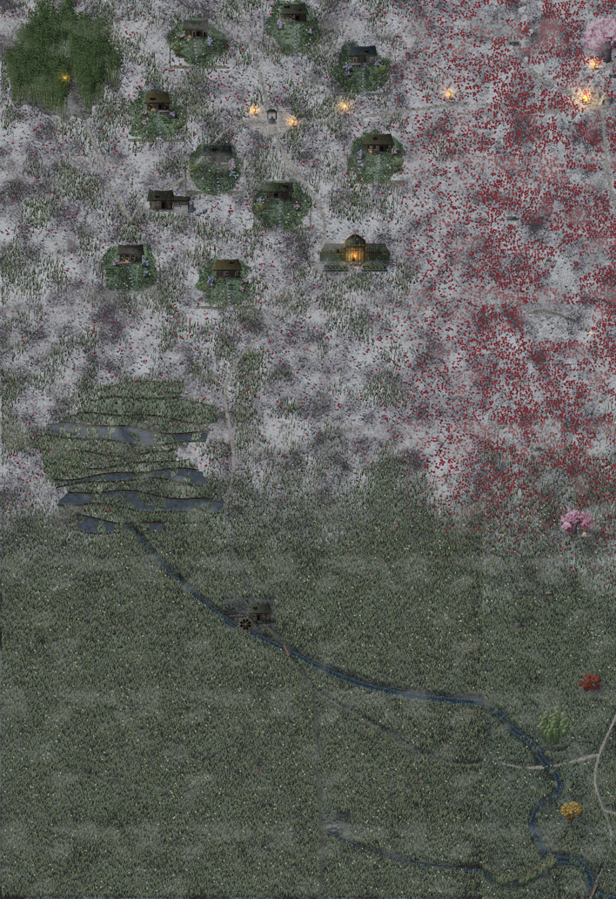<figcaption><b>Überblick:</b> Oben liegt das Dorf, links oben der Bambushain. Darunter stufen sich die Reisfelder ab, dann folgen das Grasfeld mit dem Mühlbach und unten der kleine Bach aus der Quelle. Beide Bäche laufen rechts in die heutigen hinein.</figcaption></figure>
<figure>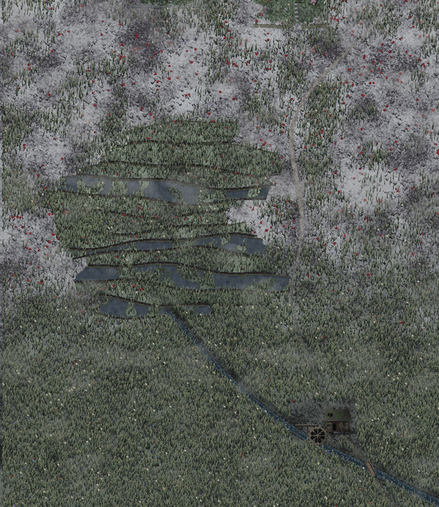<figcaption><b>Reisfelder (Furuta):</b> Die Terrassen ziehen sich als Hang hinunter, oben schmal, in der Mitte breit. Jede Stufe ist anders tief und endet woanders. Zwischen den Stufen laufen Erddämme mit Gras, darunter fällt eine dunkle Erdkante zur nächsten ab. Nur ein paar Felder halten noch Wasser, mit alten Stoppelreihen und Schilf, und auch die wachsen vom Rand her zu. Die übrigen sind trocken und voller Gras. In einem steht eine schiefe Vogelscheuche. Der Weg vom Gewächshaus läuft am Rand der Terrassen hinunter zur Mühle.</figcaption></figure>
<figure>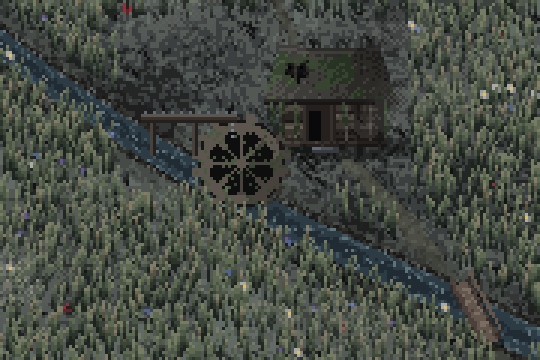<figcaption><b>Wassermühle (Suisha-goya):</b> Ein kleines Haus mit Strohdach und Bretterwand steht am Mühlbach. Davor steht das große Wasserrad mit Speichen und Schaufeln, zwei Schaufeln sind abgebrochen. Eine Holzrinne auf Pfosten bringt noch ein dünnes Rinnsal oben aufs Rad. Unten rechts führt eine Brücke über den Bach.</figcaption></figure>
<figure>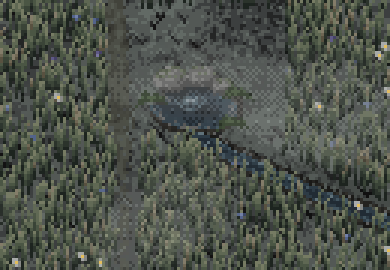<figcaption><b>Quelle:</b> Dieselbe Quelle wie im Süden: Unter einem moosigen Stein tritt Wasser in einen kleinen Teich. Daraus fließt der kleine Bach nach Osten. Um die Quelle herum ist eine kleine freie Stelle, der Seeweg läuft links daran vorbei.</figcaption></figure>
<figure>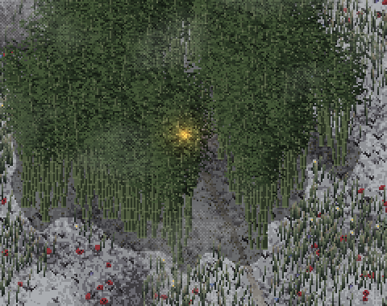<figcaption><b>Bambushain (Takeyabu):</b> Er ist dicht und dunkel. Die hohen Halme haben helle Knotenringe und oben ein Blätterdach. Der Weg vom Steinmetz führt hinein bis zu einer kleinen Lichtung. Dort brennt eine Steinlaterne, sie ist das einzige Licht im Hain.</figcaption></figure>
<p>Was mir selbst noch auffällt: Im hohen Gras sieht man die Wege kaum, das ist im Süden heute aber genauso. Und der Bambus ist von oben eher eine grüne Masse, die Halme sieht man vor allem am unteren Rand.</p>
<p>Runde 1: Bambus passt. Eine Kante in der Landschaft, Reisterrassen wie hineingesetzt, Wasserrad einfarbig mit schwarzen Feldern, Gras um Mühle und Quelle eckig ausgeschnitten.</p>
</details>
</details>
<details class="step" id="westen-4-plan"><summary><div class="tag">SCHRITT 65 · WESTEN · ZONE 4 · PLAN ABGENOMMEN</div><h2>Reisfelder, Mühle, Bambus, Westsee</h2></summary>
<p>Zone 4 ist das ganze restliche Gebiet, vom Dorf bis ganz nach unten. Bevor ich zeichne, hier die Lage. Rechts von der roten Linie ist die heutige Karte.</p>
<p><b>Runde 3:</b> Der See ist nicht mehr am rechten Rand abgeschnitten. Die ersten Spalten der heutigen Karte mit dem Wasserstreifen und den Randtannen fallen ohnehin weg. Deshalb hat der Westsee jetzt ein eigenes, geschwungenes Ostufer. Dahinter läuft ein Wiesenstreifen mit dem Uferweg bis zur heutigen Karte, und das Teehaus steht am Ufer an der Kreuzung.</p>
<figure>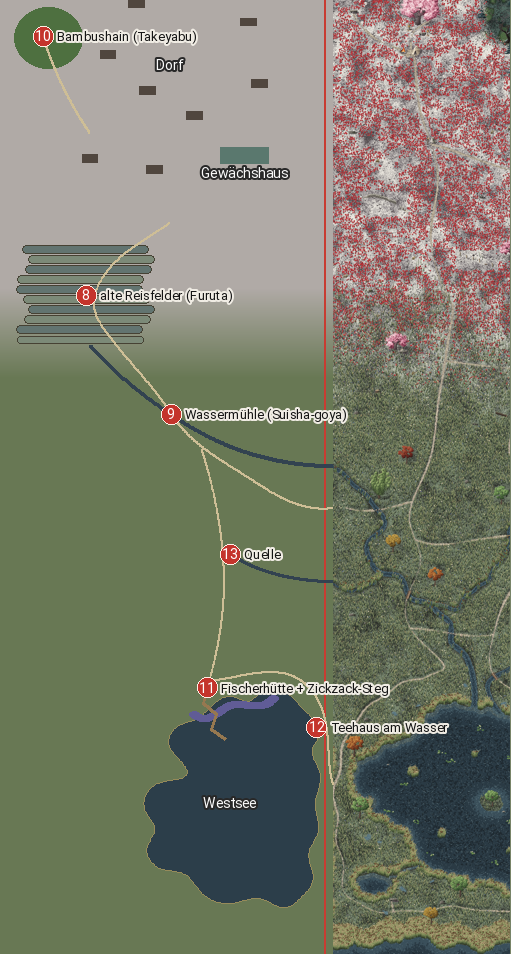<figcaption>Lageskizze Runde 3.</figcaption></figure>
<p>Runde 3: See passt, Plan abgenommen (7. 11.).</p>
<details><summary>Runde 2 (vorher)</summary>
<p><b>Runde 2:</b> Das Teehaus steht jetzt weiter oben an der Kreuzung, wo der Weg von der Fischerhütte nach unten abbiegt. Das Ufer des Westsees ist natürlicher: Im Norden hat er eine Bucht für die Iris, im Westen eine Landzunge, im Südwesten eine kleine Schilfbucht. Die gerade Kante rechts ist nur die Naht. Dort geht das Wasser in den Streifen über, der heute schon am Kartenrand liegt, und das Ufer dahinter ist das heutige.</p>
<figure>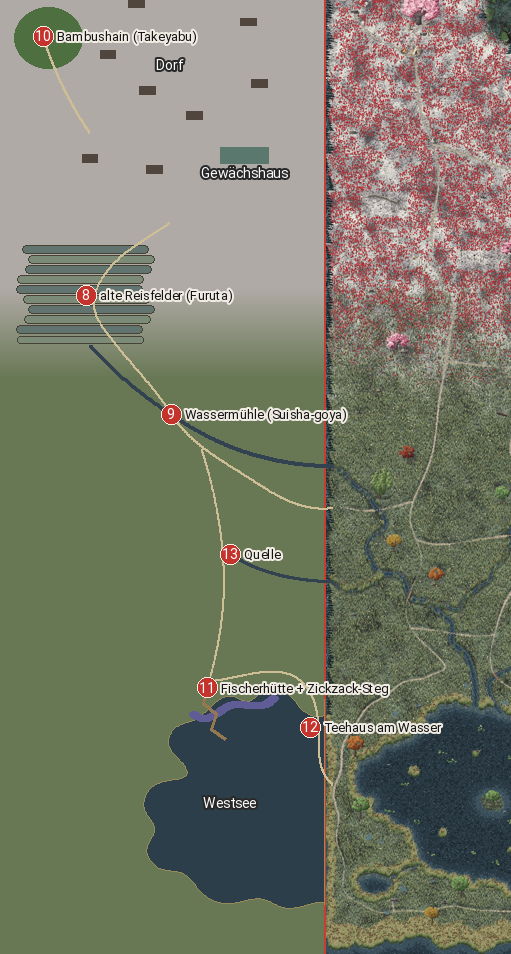<figcaption>Lageskizze Runde 2.</figcaption></figure>
<p>Runde 2: Der See sah am rechten Rand noch abgeschnitten aus.</p>
</details>
<details><summary>Runde 1 (vorher)</summary>
<figure>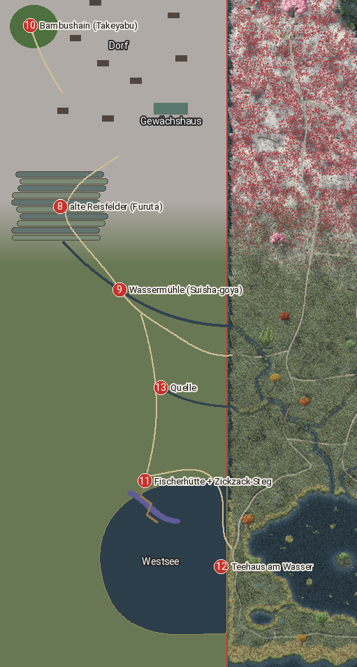<figcaption>Lageskizze: Die Orte haben dieselben Nummern wie im großen Plan, dazu kommt die 13 für die Quelle.</figcaption></figure>
</details>
<p><b>Was die heutige Karte vorgibt:</b> Zwei Bäche kommen heute schon von links in die Karte, der große Südbach und ein kleiner darunter. Ganz unten links endet die Karte außerdem mit einem schmalen Wasserstreifen, so als ginge dort im Westen ein See weiter. Das nehme ich auf:</p>
<ul>
<li><b>8 Reisfelder:</b> Die Terrassen liegen südwestlich unter dem Dorf und stufen sich nach unten ab. Einige stehen noch unter Wasser und sind voller Schilf, andere sind trocken und zugewachsen. Der Weg vom Gewächshaus läuft über die Dämme.</li>
<li><b>9 Wassermühle:</b> Am unteren Ende der Felder läuft das Wasser als Bach ab. An ihm steht die Mühle mit ihrem Wasserrad, dann fließt er nach Osten und wird zum heutigen Südbach. Er bekommt deshalb auch die Wassertextur der Südbäche.</li>
<li><b>13 Quelle:</b> Daraus entspringt der kleine Bach, der heute schon in die Karte hineinläuft.</li>
<li><b>10 Bambushain:</b> Er liegt westlich vom Dorf, ist dunkel und hat eine Laterne darin.</li>
<li><b>Westsee:</b> Ein neuer See im Westen genau dort, wo der Wasserstreifen am Rand ist. Zwischen ihm und dem heutigen See verläuft der Uferweg.</li>
<li><b>11 Fischerhütte:</b> Sie steht am Nordufer des Westsees. Ihr Zickzack-Steg führt durch einen Gürtel aus Iris hinaus aufs Wasser.</li>
<li><b>12 Teehaus:</b> Es steht am Ostufer, ein offener Pavillon mit Bank über dem Wasser, nah am Weg zum heutigen See.</li>
</ul>
<p>Ich würde Zone 4 in zwei Runden abnehmen lassen: erst <b>4a</b> mit Bambus, Reisfeldern, Mühle und Quelle, dann <b>4b</b> mit dem Westsee, der Fischerhütte, dem Teehaus und den Seewiesen unten.</p>
<p>Runde 1: Plan passt, der Westsee ist okay. Das Teehaus soll höher an die Kreuzung, der See soll natürlicher aussehen. Beides ist in Runde 2 erledigt.</p>
</details>
<details class="step" id="westen-3"><summary><div class="tag">SCHRITT 64 · WESTEN · ZONE 3 · ABGENOMMEN</div><h2>Dorfschrein und Obstwiese</h2></summary>
<p>Ich habe deine drei Punkte umgesetzt.</p>
<figure>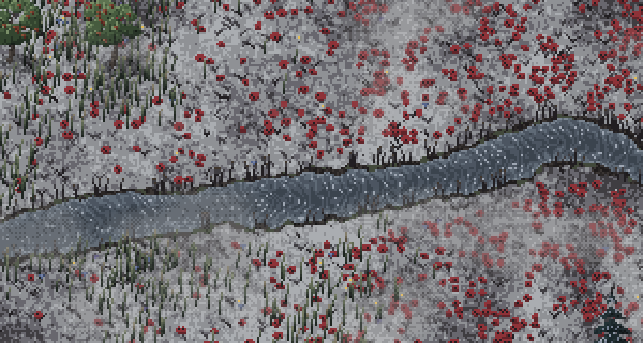<figcaption><b>Bach:</b> Er ist jetzt nach demselben Rezept gemalt wie der alte: dieselben sechs Wasserfarben, dasselbe Wellenmuster mit hellen Glitzerpunkten, ein dunkles Erdufer mit Moosflecken und Schilfhalmen am Rand. Rechts im Bild ist der alte Bach, links der neue. Er ist auch etwas breiter geworden, an der Naht genauso breit wie der alte.</figcaption></figure>
<figure>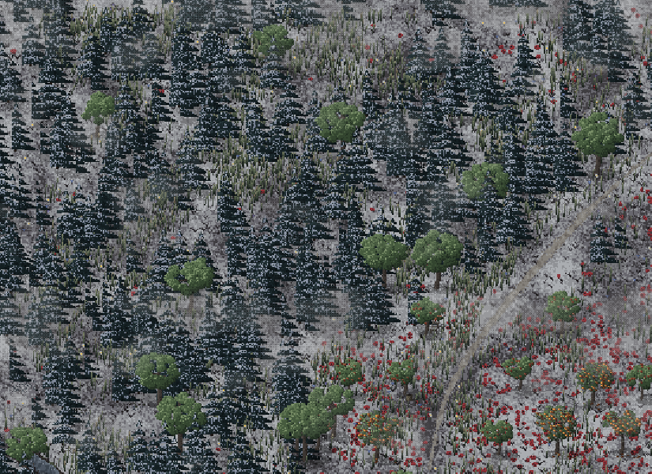<figcaption><b>Wald:</b> Er hat jetzt deutlich weniger Tannen und mehr Lichtungen. Dazwischen stehen vereinzelt die Laubbäume aus dem Süden, am Waldrand etwas mehr als tief drin.</figcaption></figure>
<figure>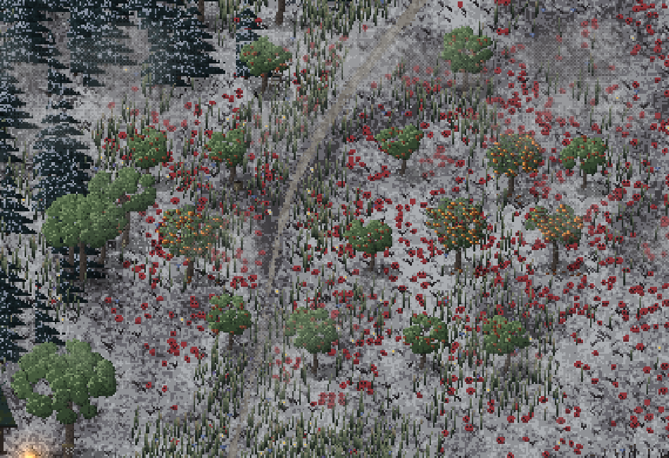<figcaption><b>Kakis:</b> Das Orange ist gedämpfter, ein warmes Rostorange, das zum Abend passt. Man erkennt sie aber noch gut neben den Apfelbäumen.</figcaption></figure>
<figure>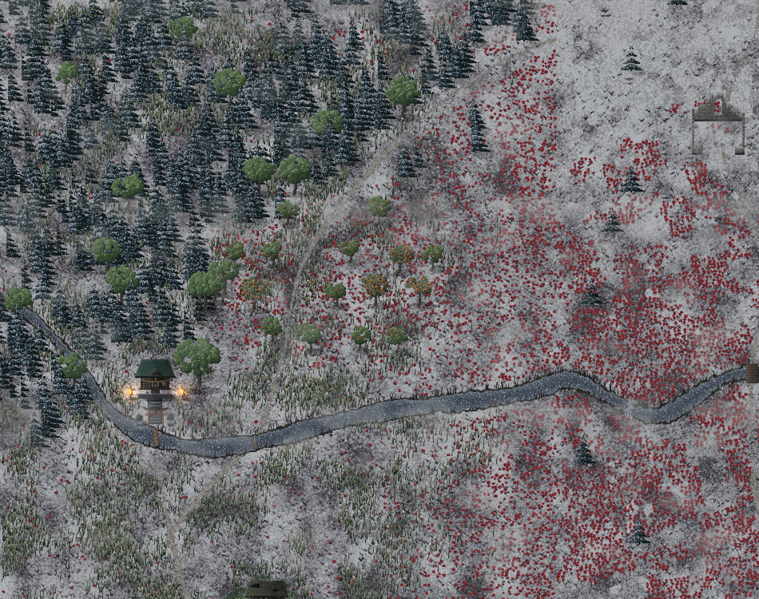<figcaption>So sieht Zone 3 jetzt im Ganzen aus.</figcaption></figure>
<p>Runde 2: abgenommen (7. 11.). Der neue Bach bekommt im Spiel die Wasserart des alten Startbachs (Art 1), damit er genauso fließt und glitzert.</p>
<details><summary>Runde 1 (vorher)</summary>
<p>Der Entwurf reicht jetzt nach Norden bis an den Wald. Vom Platz führt der Nordweg zum Schrein am Waldrand. Ein zweiter Weg geht durch die Obstwiese und den Wald hinauf nach Kogarashi.</p>
<figure>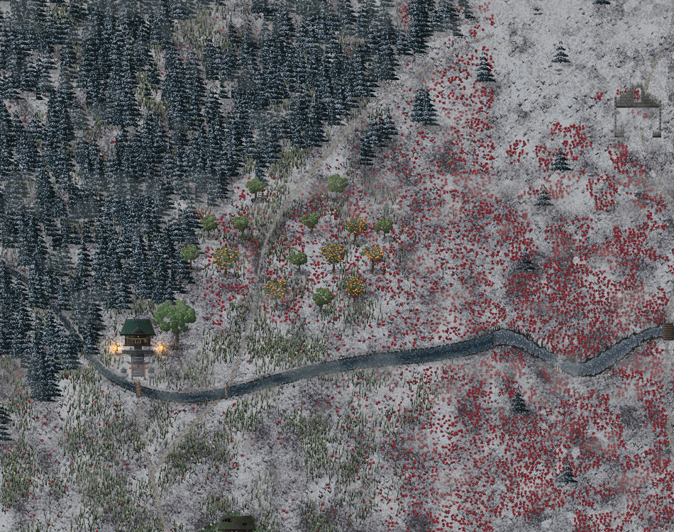<figcaption><b>Überblick:</b> Oben links liegt der Tannenwald. Er ist aus denselben Tannen gemacht, die heute am linken Kartenrand stehen, mit Lichtungen, und nach Osten hin wird er lichter. Davor steht der Schrein, rechts darüber die Obstwiese. <b>Neu dabei ist der Bach:</b> Der heutige Bach endet am linken Kartenrand. Im Westen entspringt er jetzt im Wald, fließt am Fuß der Schreintreppe vorbei und läuft nahtlos in den alten Bach. Beide Wege gehen auf einer Brücke darüber.</figcaption></figure>
<figure>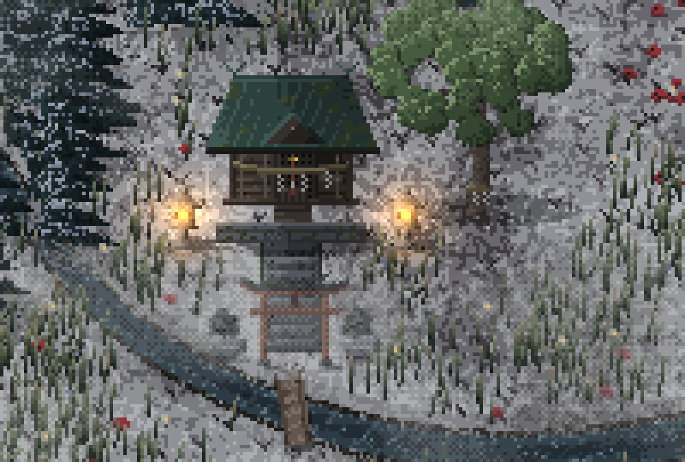<figcaption><b>Dorfschrein (Sato-no-yashiro):</b> Über den Bach geht eine Holzbrücke. Dahinter stehen ein verblasstes rotes Torii und eine Steintreppe mit acht Stufen hinauf zum Schrein. Er steht auf einem Steinsockel und hat ein grün angelaufenes Kupferdach mit kleinem Giebel, Moos darauf und gekreuzten Hölzern an den Enden. Vorn sind Gittertüren, der Opferkasten, das Glockenseil rot-weiß und ein durchhängendes Strohseil mit Papierstreifen, einer davon fehlt. Links und rechts brennen zwei Steinlaternen, das einzige Licht hier. Daneben steht der alte heilige Baum mit Strohseil um den Stamm. An der Treppe sitzen zwei steinerne Wächterhunde.</figcaption></figure>
<figure>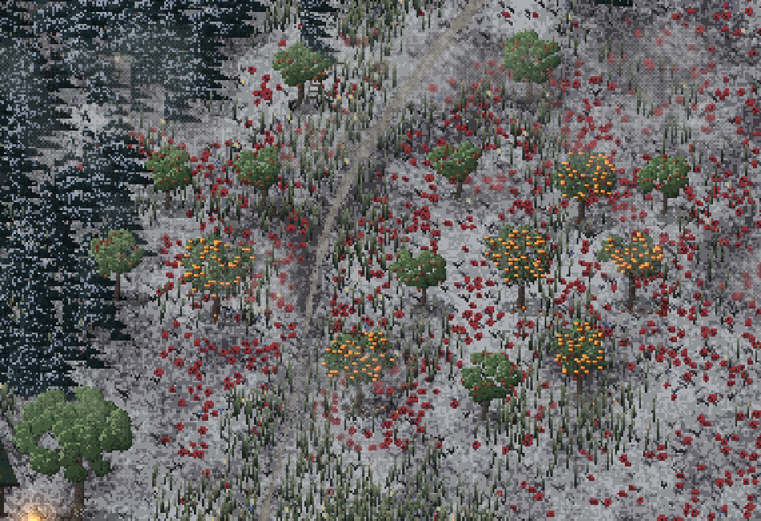<figcaption><b>Obstwiese (Kaju-no-hara):</b> Die alten Baumreihen sind locker geworden. Die meisten Bäume sind Kakis, die keiner mehr erntet: wenig Laub, voller oranger Früchte, und darunter liegt Fallobst. Dazwischen stehen ein paar Apfelbäume. An einem lehnt noch eine Leiter mit gebrochener Sprosse, irgendwo steht ein Korb. Die Wiese ist voller Mohn, wie auf deinem lebendigen Bild.</figcaption></figure>
<p>Was mir selbst noch auffällt: Die Wächterhunde sind sehr klein und kaum zu sehen. Die Brücke vor dem Torii wirkt wie ein einzelnes Brett. Der Wald ist noch recht gleichmäßig.</p>
<p>Wie gefällt dir das? Passt der Bach so, und soll an Schrein oder Obstwiese noch etwas dazu?</p>
</details>
</details>
<details class="step" id="westen-2"><summary><div class="tag">SCHRITT 63 · WESTEN · ZONE 2 · ABGENOMMEN</div><h2>Gewächshaus und Steinmetz</h2></summary>
<p><b>Runde 4:</b> Das Steinmetzhaus und die Größe sind abgenommen. Die hellen Punkte auf den Scheiben habe ich entfernt, sie lagen als gleichmäßiges Muster über den Rissscheiben und sahen aus wie Pixelfehler. Jetzt haben sechs der großen Scheiben einen echten Riss: eine dünne, zackige helle Linie aus einer Ecke, manchmal mit einer kurzen Abzweigung, die zu den Enden hin schwächer wird. Wo Ranken oder Gras über dem Glas liegen, ist kein Riss.</p>
<figure>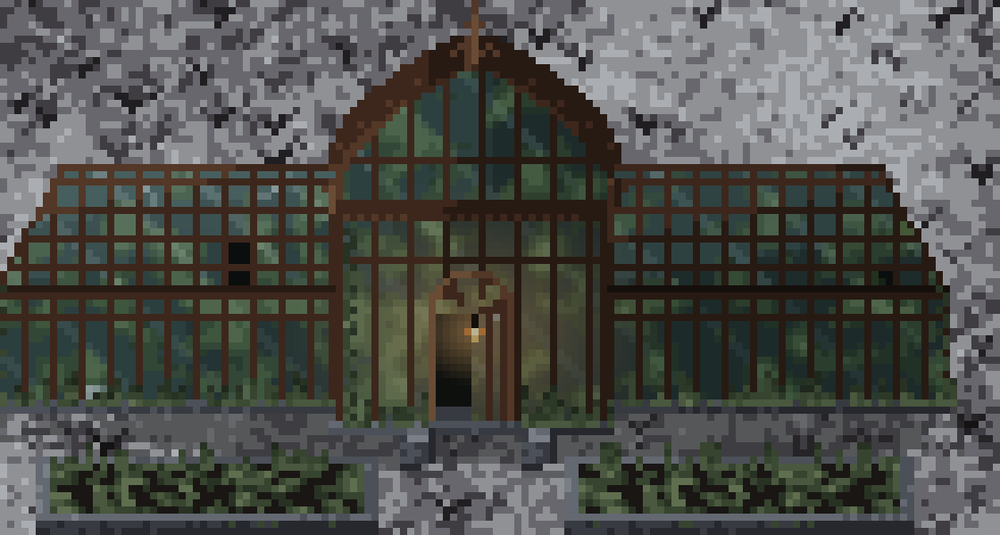<figcaption>Die Risse sieht man am besten links im Pavillon und in den Flügeln. Die zwei fehlenden Scheiben sind die dunklen Löcher.</figcaption></figure>
<p>Runde 4: Risse passen, Zone 2 abgenommen (7. 11.).</p>
<p>Ich habe deine drei Punkte umgesetzt: Das Gewächshaus ist größer, die Beete stehen in der richtigen Perspektive, und das Steinmetzhaus hat richtige Bretter bekommen.</p>
<figure>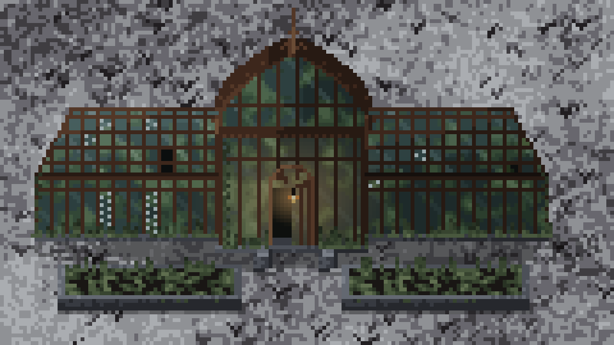<figcaption><b>Gewächshaus:</b> Es ist jetzt gut 135 Pixel breit statt 110, und der Pavillon ist deutlich höher. Der Giebel hat runde Schultern und läuft oben spitz zu, wie auf deinem Bild. Die Tür ist größer, die Laterne leuchtet weiter. Die Beete sieht man jetzt schräg von oben, wie alles andere im Spiel: Oben ist die helle Steinkante rundherum, vorn die Steinwand mit Fugen und darunter ein Schatten. Das Unkraut wächst über die hintere Kante.</figcaption></figure>
<figure>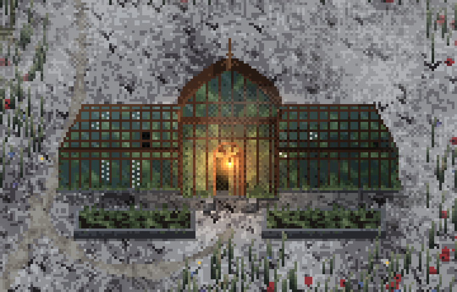<figcaption>So steht es im Dorf. Der Weg läuft jetzt unter den Beeten durch zur Tür.</figcaption></figure>
<figure>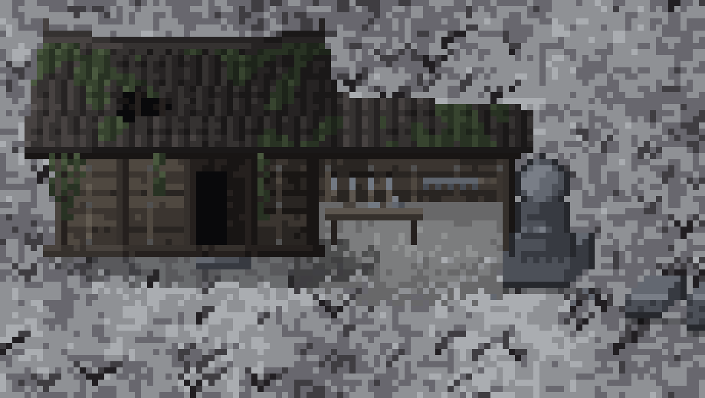<figcaption><b>Steinmetz:</b> Haus und Werkstatt haben jetzt eine Wand aus waagerechten, überlappenden Brettern, wie bei alten japanischen Häusern. Jedes Brett hat einen eigenen Ton, eine helle Unterkante und darunter einen Schatten. Dünne Leisten mit Nagelköpfen halten sie. Ein paar Bretter sind gerissen oder dunkel vom Regen. Statt Papierwänden hat das Haus jetzt fast nur Bretter.</figcaption></figure>
<p>Runde 3: Passt es so? Antwort: Steinmetzhaus super, Größe passt, nur die hellen Pixel auf den Scheiben nicht.</p>
<details><summary>Runde 2 (vorher)</summary>
<p>Beides ist nach deinen Hinweisen neu gebaut: Das Gewächshaus sieht jetzt aus wie das alte viktorianische Glashaus auf deinem Bild, und der Steinmetz arbeitet jetzt in einem Anbau an seinem Haus.</p>
<figure>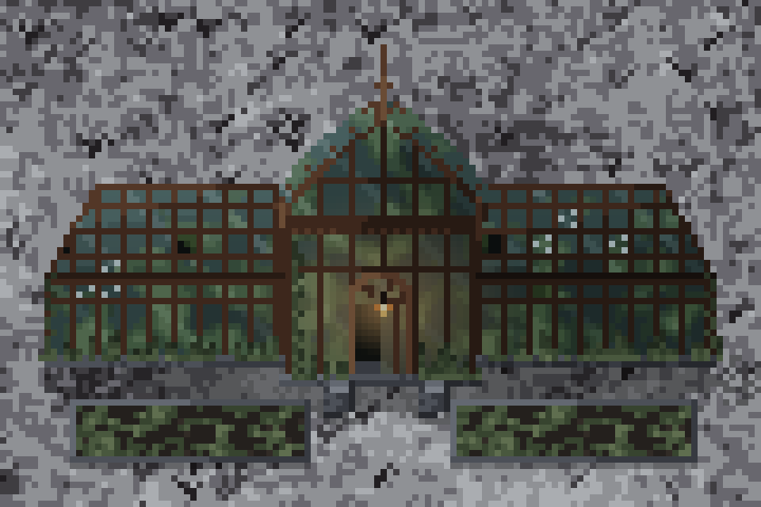<figcaption><b>Gewächshaus:</b> In der Mitte steht ein hoher Pavillon mit rundem Spitzgiebel, Eisenzier an den Kanten und einer Spitze obendrauf. Darin ist die Bogentür mit Fächerfenster, ein Flügel steht offen, und dahinter hängt die Laterne. Links und rechts gehen zwei lange, niedrige Flügel ab, deren Glasdach sich nach hinten wölbt und an den Enden rund ausläuft. Das Eisen ist rostbraun, das Glas grünlich, und drinnen drücken Blätter gegen die Scheiben. Ein paar Scheiben haben Risse, zwei fehlen. Gras und Ranken wachsen am Sockel hoch. Vorn stehen zwei Steinpfosten an der Tür und zwei verwilderte Beete mit Steinkante.</figcaption></figure>
<figure>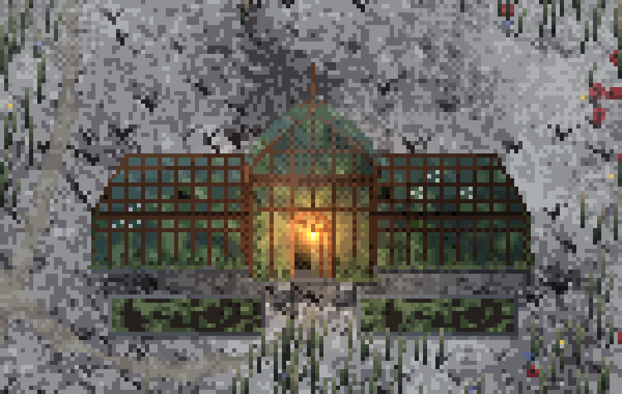<figcaption>So steht es im Dorf. Der Weg kommt jetzt unter den Beeten durch bis zur Tür. Mit gut 110 Pixeln ist es fast doppelt so breit wie vorher.</figcaption></figure>
<figure>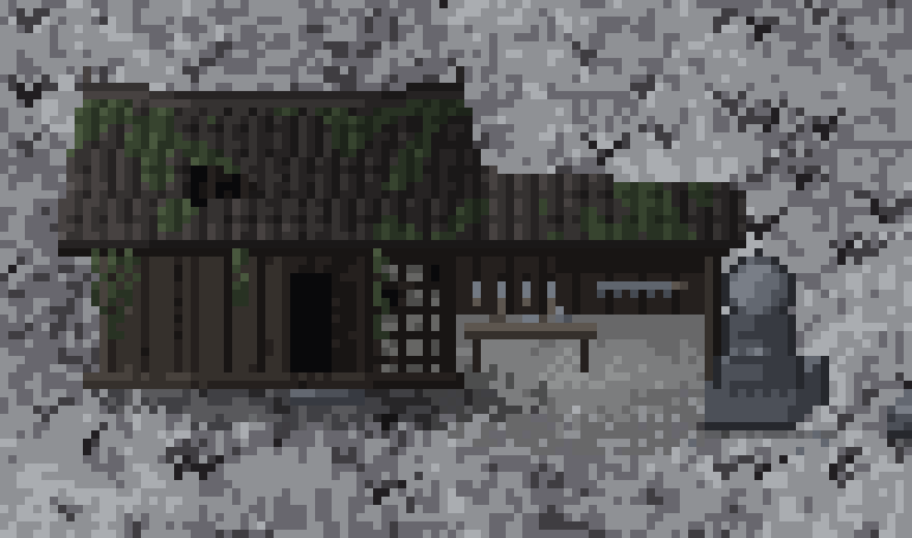<figcaption><b>Steinmetz:</b> Er hat jetzt ein kleines Haus mit Ziegeldach. An dessen Ostseite liegt unter einem Pultdach die offene Werkstatt, und ihr Dach schiebt sich unter die Traufe des Hauses. Die Rückwand geht aus Brettern vom Boden bis unters Dach, über die ganze Breite, und hängt am Haus. Daran hängen Meißel und eine Säge, davor steht die Werkbank, der Boden ist hell vom Staub. Neben dem Eckpfosten draußen steht der halbe Jizō: Kopf, Gewand und gefaltete Hände sind schon heraus, unten ist noch der rohe Block.</figcaption></figure>
<figure>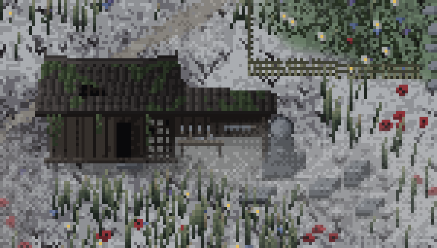<figcaption>So steht er im Dorf. Der Nebel liegt da gerade dicht, deshalb ist es heller. Die Blöcke liegen jetzt rechts vor der Werkstatt.</figcaption></figure>
<p>Das Innere vom Gewächshaus wird später ein eigener Bildschirm wie die Höhle, das kommt nach den Zonen.</p>
<p>Kommt das Gewächshaus jetzt an dein Bild heran? Und passt der Steinmetz so, mit Werkstatt am Haus?</p>
</details>
<details><summary>Runde 1 (vorher)</summary>
<p>Beide stehen jetzt im Dorf, im selben Entwurf wie Zone 1. Das Gewächshaus liegt im Süden am Weg, der Steinmetz im Westen am Ende des Wegs vom Platz.</p>
<figure>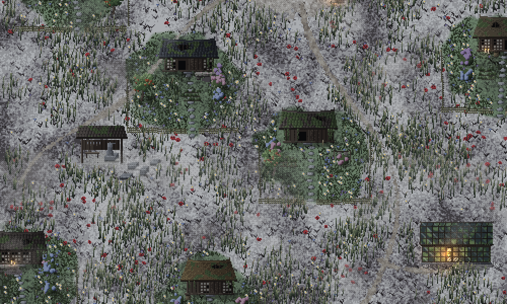<figcaption>Wo die beiden stehen: links der offene Unterstand vom Steinmetz, rechts unten das Gewächshaus mit seinem warmen Licht.</figcaption></figure>
<figure>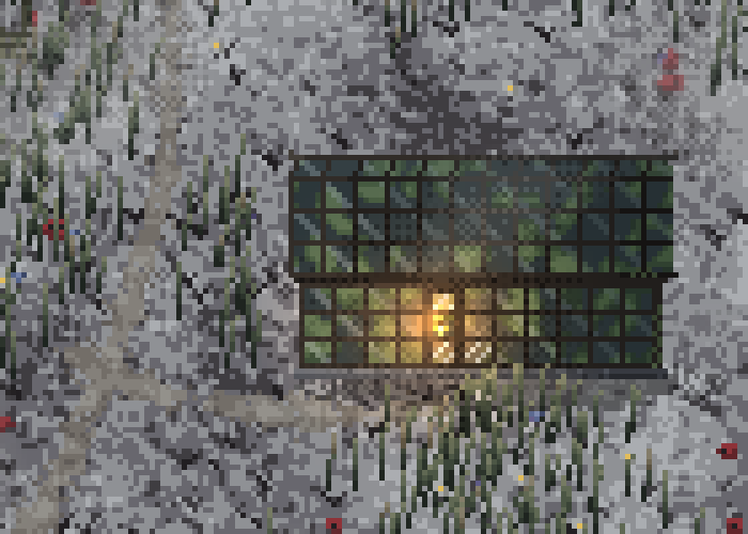<figcaption><b>Gewächshaus:</b> Es ist das einzige Haus, das noch ganz ist. Ein niedriger Steinsockel trägt Wände und Dach aus kleinen Glasscheiben in dunklen Holzsprossen. Drinnen drücken große Blätter gegen das Glas. Eine Laterne hängt innen und leuchtet durch die Scheiben. Ein paar Scheiben haben Risse, eine fehlt ganz, und an einer Ecke klettern die ersten Ranken hoch. Die Tür ist vorn, ein kurzer Weg führt dorthin.</figcaption></figure>
<figure>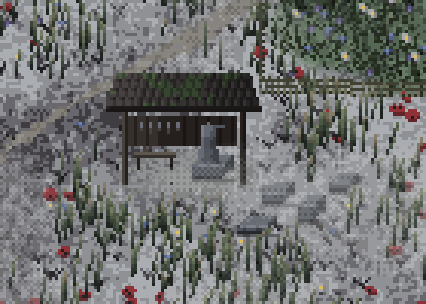<figcaption><b>Steinmetz:</b> ein offener Unterstand mit moosigem Ziegeldach. Der Boden ist hell vom Steinstaub. An der Rückwand hängen Meißel und eine Säge, auf der Werkbank liegen Klöpfel und Meißel. Daneben steht ein Jizō, halb aus seinem Block gehauen. Draußen warten behauene Blöcke.</figcaption></figure>
<p>Wie gefallen dir die beiden? Soll das Gewächshaus größer sein, mehr Licht haben oder einen kleinen Garten drumherum bekommen? Und fehlt dir beim Steinmetz etwas?</p>
</details>
</details>
<details class="step" id="westen-1"><summary><div class="tag">SCHRITT 62 · WESTEN · ZONE 1 · ABGENOMMEN</div><h2>Dorfeingang, Platz und die neun Häuser</h2></summary>
<p><b>Abgenommen (7. 11.)</b> mit einer Ergänzung von dir: Vor vier Häusern stehen jetzt zwei oder drei Kerzen auf der Veranda (fünf waren dir zu viele). Sie geben einen kleinen warmen Schein. Im Spiel flackern sie.</p>
<figure>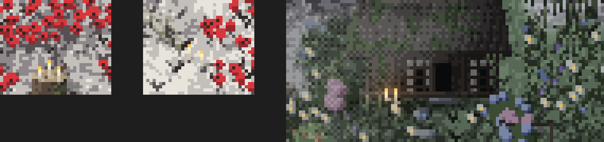<figcaption>Links die Kerzen, die schon im Spiel stehen: auf dem Baumstumpf und am Mauerende im Süden. Rechts die neuen, in genau derselben Art, zwei oder drei Stück, links neben der Tür auf der Veranda. Vorher hat das Haus sie dort verdeckt, jetzt werden sie nach dem Haus gezeichnet.</figcaption></figure>
<figure>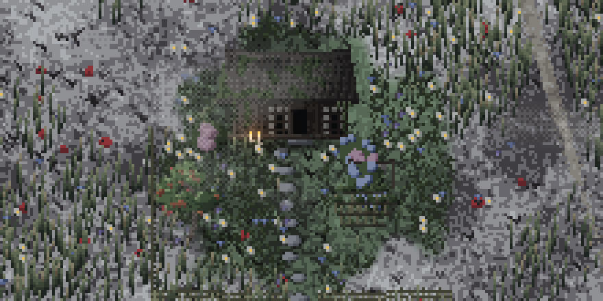<figcaption>Das Haus mit den Kerzen etwas weiter weg.</figcaption></figure>
<p><b>Runde 2:</b> Die drei Sachen aus Runde 1 sind behoben.</p>
<ul>
<li><b>Gärten:</b> Sie heben sich jetzt grün von der grauen Wiese ab. Dort wächst kurzes, dichtes Gras mit viel mehr Wildblumen und Hortensien. Vorn läuft ein durchgehender Zaun oder ein Mäuerchen mit einer Lücke, und Trittsteine führen von der Tür dorthin.</li>
<li><b>Dächer:</b> Jedes Haus hat sein eigenes Dach. Es gibt dunkle, braungraue und verblichen blaue Ziegel sowie graues oder noch goldenes Stroh. Moos wächst auf manchen kaum, andere sind ganz überwachsen.</li>
<li><b>Beete:</b> Sie liegen jetzt flach im Boden, mit weichen Erdfurchen ohne Rahmen. Darin wächst noch Kohl und Kraut, vereinzelt stehen Bohnen an Stangen.</li>
</ul>
<figure>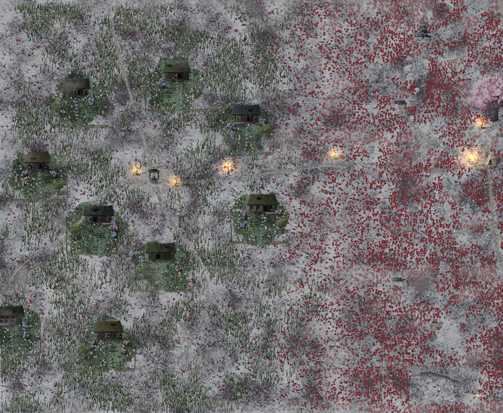<figcaption>Das ganze Stück, Runde 2.</figcaption></figure>
<figure>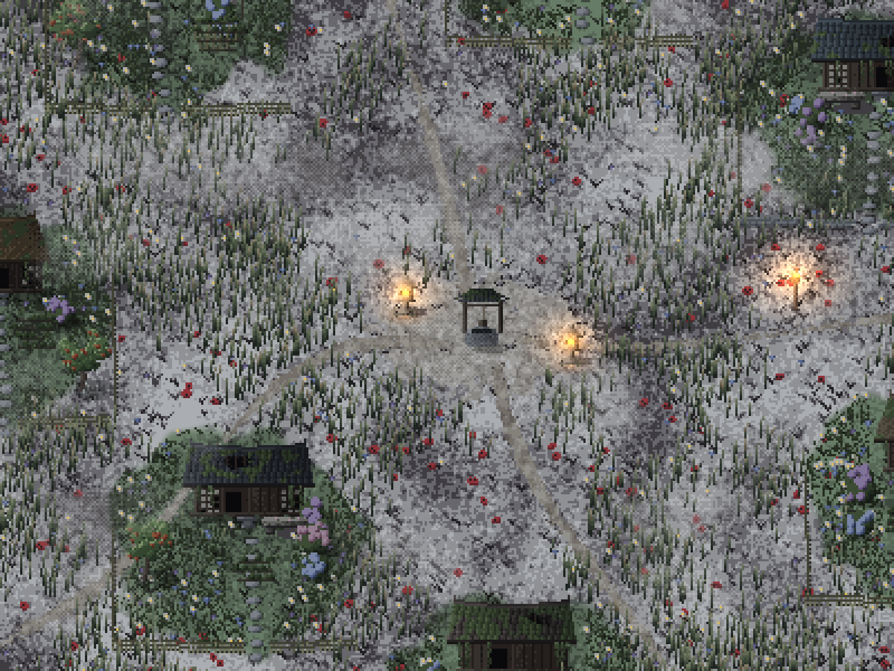<figcaption>Der Platz mit dem Brunnen und die Gärten drumherum.</figcaption></figure>
<figure>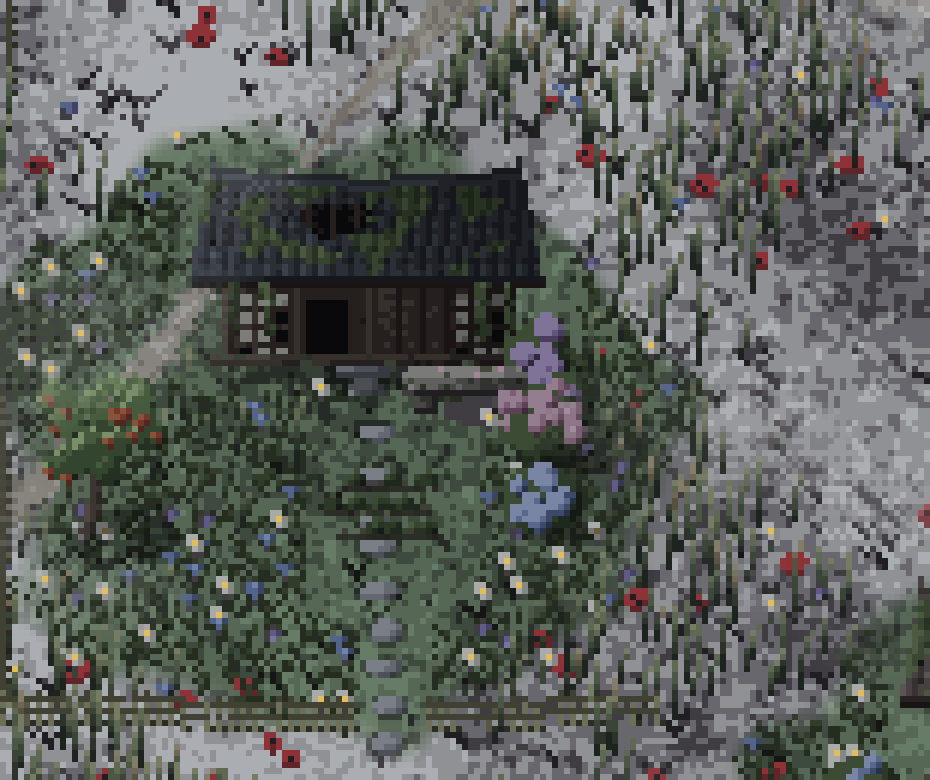<figcaption>Ein Garten ganz nah: Trittsteine von der Tür zum Zaun, Hortensien, ein Obstbäumchen und Wildblumen im kurzen Gras.</figcaption></figure>

<details><summary>Runde 1</summary>
<figure>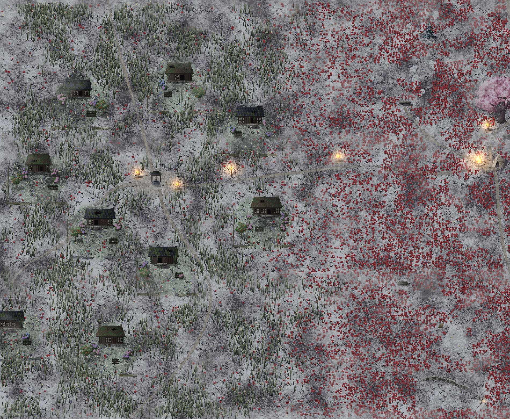<figcaption>Das ganze Stück, doppelt vergrößert. Die Häuser stehen locker mit ihren Gärten. Der Weg vom Lagerfeuer führt an einer Fackel vorbei zum Platz mit dem Brunnen und den zwei Steinlaternen. Von dort gehen Wege nach Norden (Schrein), Süden (Gewächshaus) und Westen (Steinmetz).</figcaption></figure>
<figure>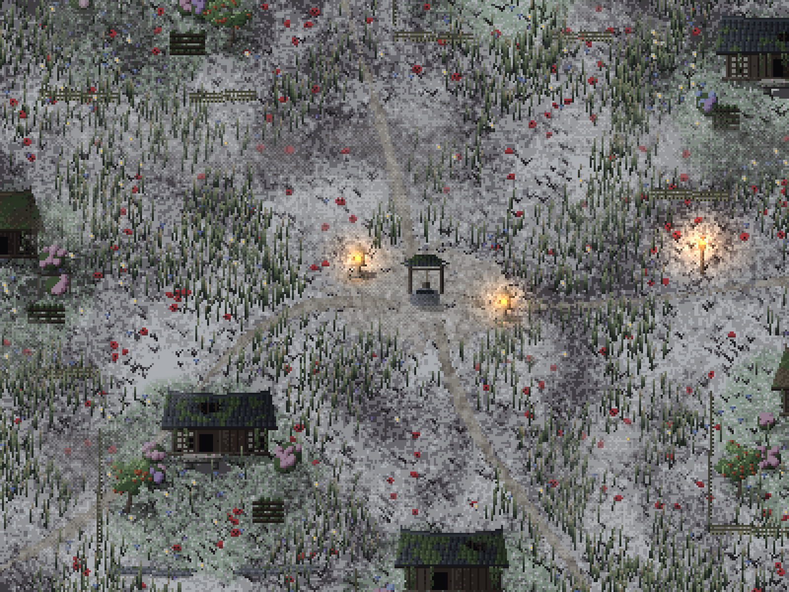<figcaption>Näher dran: der überdachte Brunnen und die verlassenen Häuser. Sie haben Moos auf dem Dach, eingefallene Stellen mit Sparren, zerrissene Shoji und Ranken. In den Gärten wachsen Hortensien, Obstbäumchen und Wildblumen, dazu gibt es Bambuszäune und Steinmäuerchen, Bänke, Körbe und eine Wäscheleine. Die Fenster bleiben dunkel.</figcaption></figure>
<p><b>Was mir selbst noch nicht gefällt:</b> Die Beete sehen eher aus wie Holzkisten. Die Dächer sind alle gleich dunkel. Die Gärten heben sich noch zu wenig von der Wiese ab. Das würde ich in der nächsten Runde angehen.</p>
<p class="ask">Wie wirkt das Dorf auf dich: Größe der Häuser im Verhältnis zur Welt, der Abstand zwischen ihnen und die Wiese mit dem Gras? Was soll anders werden?</p>
</details>
</details>
<details class="step" id="westen-plan"><summary><div class="tag">SCHRITT 61 · WESTEN · PLAN · ABGENOMMEN</div><h2>Das verlassene Dorf</h2></summary>
<p>Der Westen nach deinem Ideenblatt und deinen zwei ChatGPT-Bildern. Eine verlassene Siedlung mit Häusern und verwilderten, aber schönen Gärten, mit viel Luft dazwischen. Die Welt wächst dafür um 900 Pixel nach links, so breit wie der Süden und der Ostwald. Alles, was es heute gibt, bleibt genau so und rückt nur nach rechts.</p>
<figure>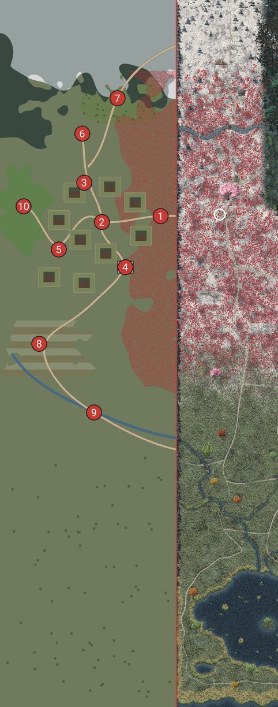<figcaption>Plan-Skizze (keine Grafik, nur die Aufteilung). Rechts der roten Linie liegt die heutige Welt, wie sie im Spiel aussieht, der weiße Kreis ist das Lagerfeuer beim Start. Braun = Häuser, hellgrün umrandet = ihre Gärten, rot = Mohn, dunkelgrün = Tannenwald, hellgrün links = Bambus, gestreift = alte Reisfelder, blau = Bach, beige = Wege.</figcaption></figure>
<ul>
<li><b>1 Dorfeingang:</b> Vom Lagerfeuer läuft ein Weg nach Westen durch den Mohn, der langsam in die Dorfwiese übergeht. Am Weg steht ein alter Wegstein oder ein kleines Tor.</li>
<li><b>2 Dorfplatz mit Brunnen:</b> die Mitte, mit dem überdachten Steinbrunnen und dem Eimer wie im Bild. Von hier gehen alle Wege ab.</li>
<li><b>3 Häuser mit Gärten:</b> 9 Häuser, jedes etwa so groß wie der Schrein beim Start, mit eigenem Garten von etwa 110 × 100 Pixeln. Die Häuser sind verlassen: Moos auf den Dächern, eingefallene Stellen, zerbrochene Fenster, Ranken. Die Gärten wachsen einfach weiter: Hortensien, Blumen, Obstbäumchen, zugewachsene Beete, schiefe Bambuszäune und Steinmäuerchen. Vor den Häusern liegen Spuren, zum Beispiel eine Bank, ein Korb, eine Wäscheleine oder Werkzeug.</li>
<li><b>4 Gewächshaus:</b> das einzige Haus, in das man hineingehen kann. Es ist noch ganz, im Glas sind höchstens ein paar Risse. Drinnen wachsen die Pflanzen dicht und grün. Innen wird es wie die Höhle ein eigener Bildschirm.</li>
<li><b>5 Steinmetz:</b> ein offener Unterstand mit halb behauenen Blöcken, einer angefangenen Figur, Meißeln und Steinstaub. Die Steine im Dorf (Brunnen, Mäuerchen, Laternen) tragen dieselben Meißelspuren.</li>
<li><b>6 Dorfschrein:</b> wie im verlassenen Bild, eine Steintreppe den Hang hinauf zu einem kleinen Tor und einem Schrein. Oben steht eine Laterne.</li>
<li><b>7 Obstwiese:</b> alte Obstbäume zwischen dem Dorf und Kogarashi. Der Weg dort führt hinüber in den Schnee und schließt den Kreis.</li>
<li><b>8 Alte Reisfelder:</b> Terrassen südlich vom Dorf, zugewachsen, mit kleinen Erdwällen.</li>
<li><b>9 Wassermühle:</b> am Bach, der weiter in die Seewiesen des Südens fließt. Ein Holzrad steht still, das Wasser läuft daran vorbei.</li>
<li><b>10 Bambushain:</b> ein kleiner Abstecher am Westrand. Dort ist es dunkel, also kommt die Laterne.</li>
<li><b>11 Fischerhütte mit Steg</b> (neu, 7. 11.): Unten am Westufer des Sees. Die Wiese wird zum See hin nass und schilfig, mit lila Schwertlilien. Ein Zickzack-Steg aus Bohlen führt durch den Sumpf zur verlassenen Fischerhütte mit Boot am Ufer, Netzen auf Gestellen und einem kurzen Steg ins Wasser mit Laterne.</li>
<li><b>12 Teehaus am Wasser</b> (neu, 7. 11.): ein kleiner offener Pavillon am Ufer mit Bank, zum Hinsetzen und Schauen.</li>
</ul>
<p><b>Rundweg ohne Sackgassen:</b> Lagerfeuer → Dorfeingang → Platz → Obstwiese → Kogarashi, und vom Platz aus nach Süden: Gewächshaus → Reisfelder → Mühle → Seewiesen. Schrein und Bambushain sind kleine Abstecher mit Ziel.</p>
<p><b>Rand der Welt:</b> Oben im Nordwesten läuft der Tannenwald aus Kogarashi und dem Norden weiter. Unten gehen die Seewiesen des Südens mit einzelnen Bäumen weiter. Ganz links verschwindet alles wie überall in Wald und Nebel, ohne harte Kante.</p>
<p><b>Licht:</b> Die Häuser bleiben dunkel, wie du gesagt hast. Warm leuchten nur Steinlaternen, ein paar Fackeln, die Laterne am Schrein und die im Gewächshaus. Bambushain und die schattigen Gärten sind dunkel, dort holt der Mönch die Laterne heraus.</p>
<figure>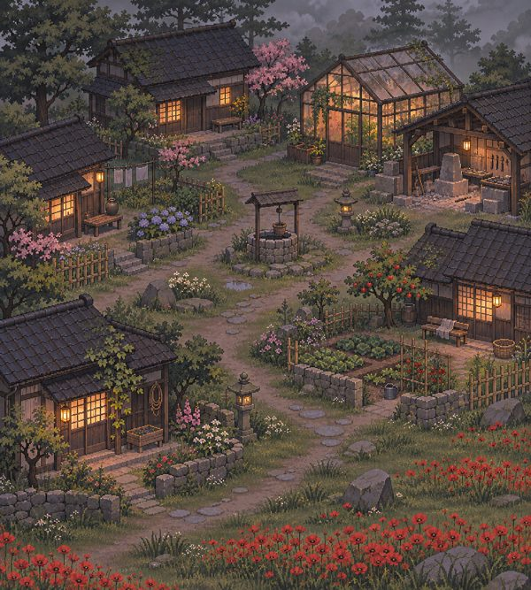<figcaption>Vorlage 1: Aufbau, Wiese und Mohn so, mit lockeren Häusern, Gärten, Trittsteinen und dem Brunnen in der Mitte.</figcaption></figure>
<figure>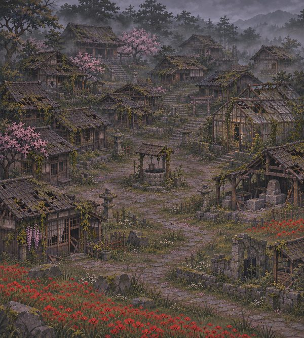<figcaption>Vorlage 2: So verfallen sind die Häuser. Das Gewächshaus dagegen ist bei uns noch ganz.</figcaption></figure>
<p><b>Namensvorschläge</b> (japanisch wie die anderen Orte): 忘れ里 Wasure-zato („vergessenes Dorf“) für das ganze Dorf · 井戸端 Idobata (Brunnenplatz) · 硝子室 Garasu-muro (Gewächshaus) · 石屋 Ishiya (Steinmetz) · 里の社 Sato-no-yashiro (Dorfschrein) · 果樹の原 Kaju-no-hara (Obstwiese) · 古田 Furuta (alte Reisfelder) · 水車小屋 Suisha-goya (Wassermühle) · 竹藪 Takeyabu (Bambushain).</p>
<p><b>Danach</b> geht es wie beim Norden weiter. Ich zeichne Zone für Zone einen echten Entwurf zur Abnahme: zuerst Dorfeingang, Platz und Häuser, dann Gewächshaus und Steinmetz, dann Schrein und Obstwiese, dann Reisfelder, Mühle und Bambus. Danach kommen das Innere des Gewächshauses, der Einbau, Licht und Klänge. Am Ende wird alles auf einmal gebaut. Die Ruine im Ostwald kommt später extra.</p>
<p class="ask"><b>Plan abgenommen (7. 11.),</b> dazu kommen Fischerhütte und Teehaus unten am See. Die Namen sind noch offen.</p>
</details>
<details class="step" id="nass"><summary><div class="tag">SCHRITT 60 · NASSER BODEN · IM SPIEL (0.17.6)</div><h2>Nasser Boden nach dem Regen</h2></summary>
<p><b>Runde 3:</b> Die Pfützen bewegen sich viel weniger. Nach dem Regen liegt das Spiegelbild ganz still. Während es regnet, zuckt es nur ab und zu um einen Pixel, und auch das langsamer als vorher. Die hellen Streifen auf dem Wasser wandern nur noch ganz langsam.</p>
<figure><video src="bild/nass_B3.mp4" autoplay loop muted playsinline></video><figcaption><b>Runde 3:</b> ruhigere Pfützen.</figcaption></figure>
<p class="ask">Ist es so ruhig genug?</p>
<p><b>Runde 2:</b></p>
<p><b>Runde 2 (B):</b> Die Feuerstelle mit ihrem Steinring bleibt jetzt trocken. Die Pfütze liegt in einer Mulde knapp unter den Steinen. Darin steht die Flamme wirklich kopfüber gespiegelt und bleibt hell, wie Feuer im Wasser. Der streifige Lichtschein ist dafür weg. Daneben steht der Mönch am Pfützenrand, sein Spiegelbild sieht man auch.</p>
<figure><video src="bild/nass_B2.mp4" autoplay loop muted playsinline></video><figcaption><b>Runde 2:</b> Regen, still, abtrocknen.</figcaption></figure>
<figure>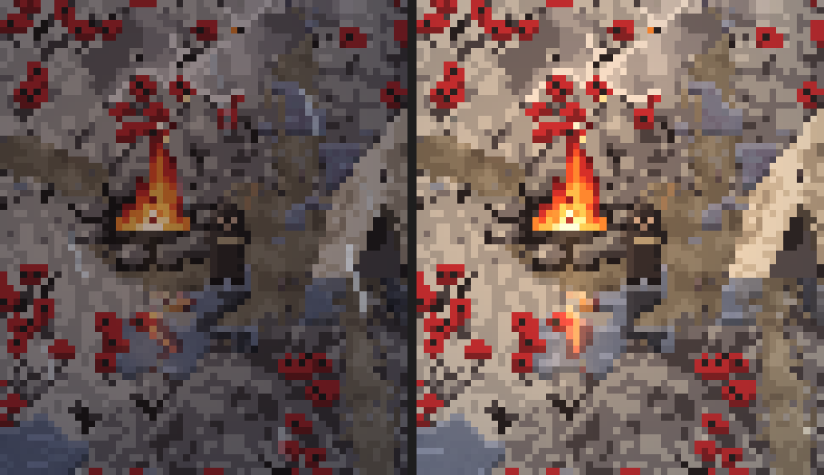<figcaption>Nah am Feuer, links im Regen, rechts kurz danach.</figcaption></figure>
<figure>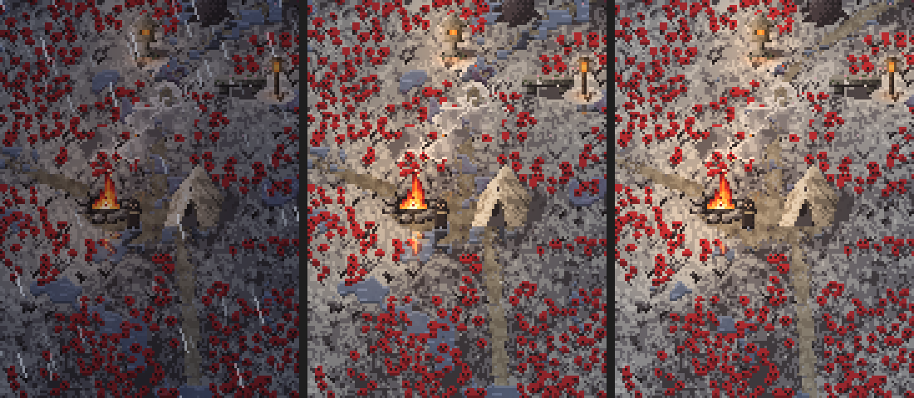<figcaption>Im Regen, kurz danach, beim Abtrocknen.</figcaption></figure>
<p class="ask">Sieht die Spiegelung jetzt echt aus? Und passt es mit etwa 4 Minuten nass nach dem Schauer?</p>
<p><b>Runde 1:</b></p>
<p>Erster Entwurf am Lagerfeuer beim Start, mit dem Mönch an einer Pfütze. Jedes Video läuft so ab: voller Schauer, dann hört es auf und die Pfützen liegen still, dann trocknet es ab. Im Spiel dauert das Abtrocknen ein paar Minuten, im Video sind es 8 Sekunden.</p>
<ul>
<li><b>Boden:</b> Weg und Erde werden nass deutlich dunkler, die Wiese etwas. Die Farben werden dabei ein wenig satter.</li>
<li><b>Pfützen:</b> Sie bilden sich in den Mulden vom Weg, an ein paar Stellen der Wiese und dort, wo man an den Laternen und am Feuer immer steht. Darin spiegelt sich der Abendhimmel mit leichten Lichtstreifen. Oben am Rand ist ein heller Saum, unten eine dunkle Kante. Während es regnet, laufen Ringe darauf. Beim Abtrocknen schrumpfen sie vom Rand her.</li>
<li><b>Licht:</b> Feuer und Laternen ziehen sich als warmer, zitternder Streifen nach unten über den nassen Boden, in den Pfützen am stärksten.</li>
<li><b>Glitzern:</b> Einzelne Pixel blitzen kurz auf, auf dem Weg und nahe am Licht am meisten.</li>
</ul>
<figure><video src="bild/nass_A.mp4" autoplay loop muted playsinline></video><figcaption><b>A:</b> Pfützen mit Himmel und dem Lichtstreifen vom Feuer und den Laternen.</figcaption></figure>
<figure><video src="bild/nass_B.mp4" autoplay loop muted playsinline></video><figcaption><b>B:</b> wie A, nur spiegeln sich zusätzlich der Mönch, das Feuer und alles, was an einer Pfütze steht, verzerrt und wackelnd. Im Regen wackelt es stärker, danach liegt es fast still.</figcaption></figure>
<figure>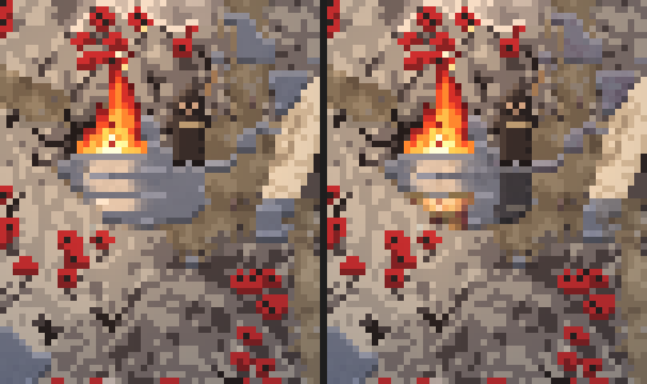<figcaption>Ganz nah am Feuer, links A, rechts B. Bei B sieht man den Mönch und die Flamme in der Pfütze.</figcaption></figure>
<figure>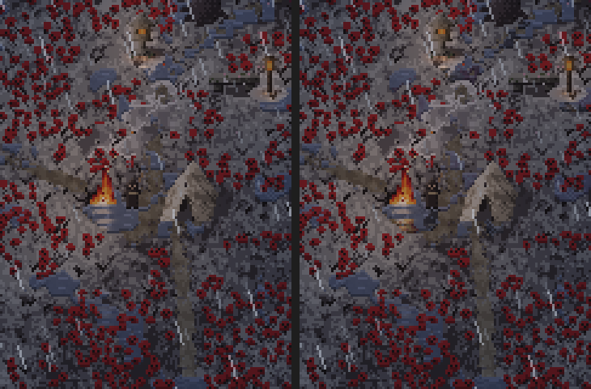<figcaption>Im Regen, links A, rechts B.</figcaption></figure>
<figure>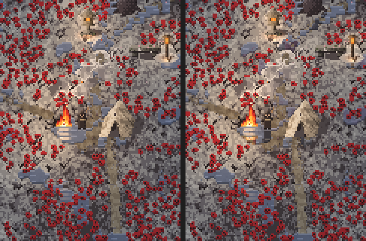<figcaption>Kurz nach dem Regen.</figcaption></figure>
<figure>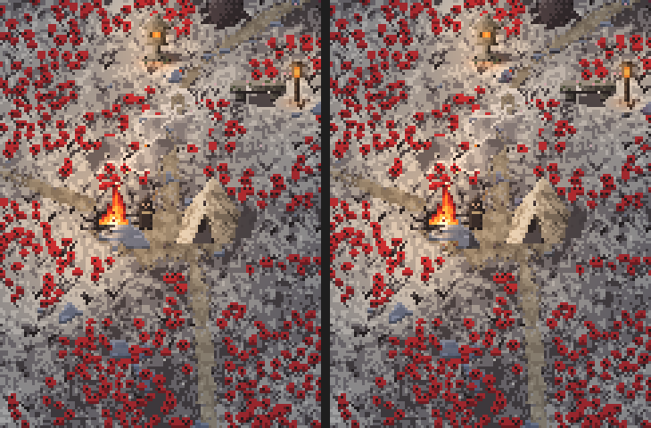<figcaption>Beim Abtrocknen.</figcaption></figure>
<p class="ask">A oder B? Und passen die Menge der Pfützen und wie lange es nass bleibt? Mein Vorschlag: etwa 4 Minuten nass nach dem Schauer, danach trocknet es langsam ab.</p>
</details>
<details class="step" id="regen"><summary><div class="tag">SCHRITT 59 · REGEN · IM SPIEL (0.16.4)</div><h2>Regen</h2></summary>
<p><b>Runde 5:</b> Noch ein kleiner Schritt, etwa 1,2-mal so schnell wie Runde 4.</p>
<figure><video src="bild/regen_ramp5.mp4" autoplay loop muted playsinline></video><figcaption><b>Runde 5:</b> ein wenig schneller.</figcaption></figure>
<p class="ask">Passt das Tempo jetzt? Dann baue ich den Regen ein. Wenn du nichts anderes sagst, nimmt der Mönch bei Regen überall die Laterne.</p>
<p><b>Runde 4:</b> Nochmal schneller, etwa 1,4-mal so schnell wie Runde 3. Die Striche sind dafür je einen Pixel länger.</p>
<figure><video src="bild/regen_ramp4.mp4" autoplay loop muted playsinline></video><figcaption><b>Runde 4:</b> schneller.</figcaption></figure>
<p><b>Runde 3:</b> Runde 2 fiel zu langsam. Jetzt liegt das Tempo dazwischen, etwa 1,6-mal so schnell wie Runde 2, und die nahen Tropfen sind einen Pixel länger.</p>
<figure><video src="bild/regen_ramp3.mp4" autoplay loop muted playsinline></video><figcaption><b>Runde 3:</b> etwas schneller.</figcaption></figure>
<p><b>Runde 2:</b> Wie beim Schnee fängt es leicht an und wird stärker, aber mit der Zeit statt mit dem Ort: Ein Schauer beginnt als Niesel, schwillt an und klingt wieder ab. Wo Schnee fällt, regnet es nicht. Die Tropfen fallen jetzt langsamer und wirklich nach unten. In Runde 1 tauchten sie in jedem Bild an neuen Stellen auf, das wirkte eher wie Flackern. Im Video steigt die Stärke über 12 Sekunden an, im Spiel dauert das ein paar Minuten.</p>
<figure><video src="bild/regen_ramp.mp4" autoplay loop muted playsinline></video><figcaption><b>Runde 2:</b> vom Niesel zum Schauer, langsamere Tropfen.</figcaption></figure>
<figure>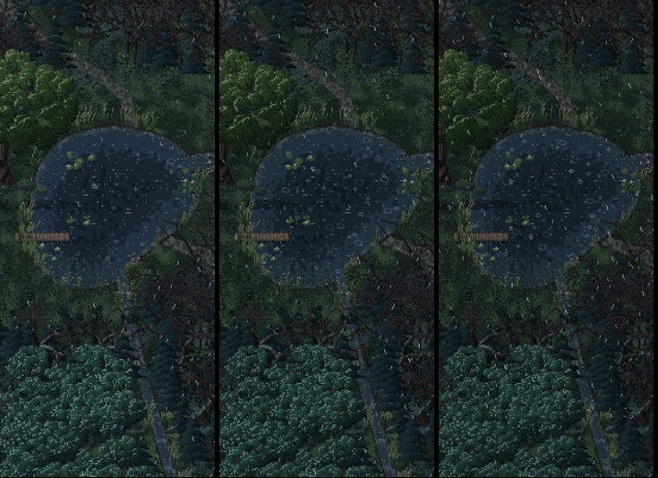<figcaption>Anfang, Mitte und voller Schauer.</figcaption></figure>
<p><b>Runde 1:</b></p>
<p>Erster Entwurf, wie Regen aussehen könnte, hier am Waldteich im Ostwald, damit man auch das Wasser sieht. Er ist ohne Ton, die Klänge kommen später, wenn du Kopfhörer hast.</p>
<ul>
<li><b>Tropfen:</b> kurze schräge Striche in drei Tiefen. Die fernen sind kurz und blass, die nahen länger und heller.</li>
<li><b>Boden:</b> Wo ein Tropfen aufkommt, spritzt es ganz kurz: ein heller Punkt, dann ein Hauch daneben.</li>
<li><b>Wasser:</b> Auf dem Teich laufen kleine Ringe auseinander und vergehen.</li>
<li><b>Licht:</b> Alles wird etwas dunkler und kühler.</li>
</ul>
<figure><video src="bild/regen_A.mp4" autoplay loop muted playsinline></video><figcaption><b>A · Nieselregen:</b> wenige Tropfen, wenige Ringe, nur etwas dunkler.</figcaption></figure>
<figure><video src="bild/regen_B.mp4" autoplay loop muted playsinline></video><figcaption><b>B · Schauer:</b> etwa zweieinhalbmal so viele Tropfen, viele Ringe, deutlich dunkler.</figcaption></figure>
<figure>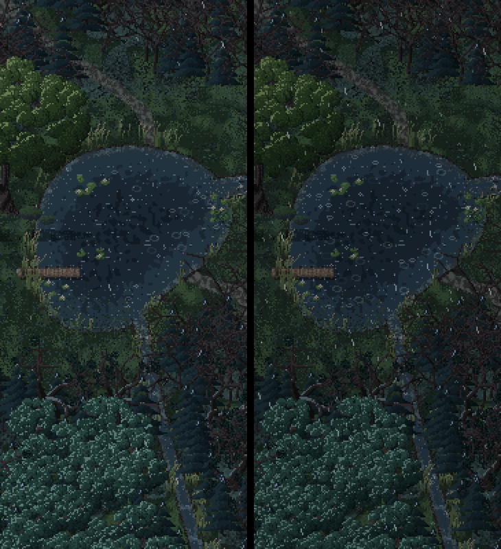<figcaption>Standbild, links A, rechts B.</figcaption></figure>
<p><b>Mein Vorschlag fürs Spiel:</b></p>
<ul>
<li><b>Wann:</b> Ab und zu zieht ein Schauer durch, etwa alle 15 bis 25 Minuten, für 3 bis 5 Minuten. Er fängt als Niesel an, wird zum Schauer und hört wieder auf, ohne harten Wechsel. Er stört nie und zwingt zu nichts.</li>
<li><b>Wo:</b> überall außer im Norden, dort schneit es ja schon. In der Höhle regnet es nicht.</li>
<li><b>Laterne:</b> Weil es dunkler wird, nimmt der Mönch bei Regen überall die Laterne, so wie du es dir mal gewünscht hast.</li>
<li><b>Danach:</b> Der Boden glänzt noch eine Weile nass. Das wäre ein eigener, späterer Schritt.</li>
</ul>

</details>
<details class="step" id="buch-umblaettern" open><summary><div class="tag">SCHRITT 58 · BUCH · UMBLÄTTERN · RUNDE 5</div><h2>Das Buch blättert um</h2></summary>
<p><b>Runde 5:</b> Zwischen dem umgeschlagenen Blatt und der Seite sah man eine Weile das dunkle Lederband, also die Rückwand des Buches. Jetzt deckt das Blatt das Band überall sofort mit ab, wo es über die Bindung geht. Es bleibt also die ganze Zeit ein durchgehendes Stück Papier.</p>
<figure><video src="bild/umblaettern_A5.mp4" autoplay loop muted playsinline></video><figcaption><b>Runde 5:</b> ohne Lücke zum Band.</figcaption></figure>
<figure>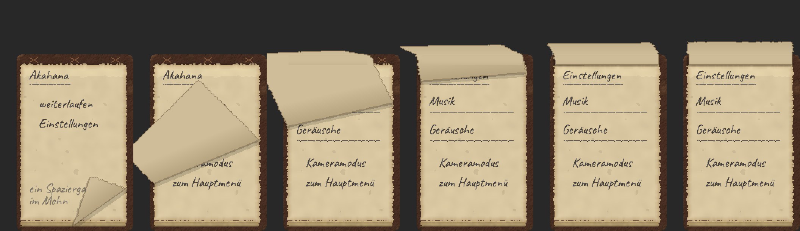<figcaption>Runde 5 in sechs Einzelbildern.</figcaption></figure>
<p class="ask">Passt es jetzt?</p>
<p><b>Runde 4:</b> In der Mitte stand das Blatt in voller Höhe über dem Buch, als würde es sich lösen. Jetzt hängt es immer am Block: Was über die Bindung kommt, legt sich sofort schräg nach hinten und wird nie höher als im Ruhezustand. Zum Schluss legt sich die Biegung über das Lederband. Im Ruhezustand liegt es jetzt viel tiefer, wie du es eingezeichnet hast: Es schaut nur noch ein schmaler Streifen über dem Band heraus.</p>
<figure><video src="bild/umblaettern_A4.mp4" autoplay loop muted playsinline></video><figcaption><b>Runde 4:</b> das Blatt bleibt am Block.</figcaption></figure>
<figure>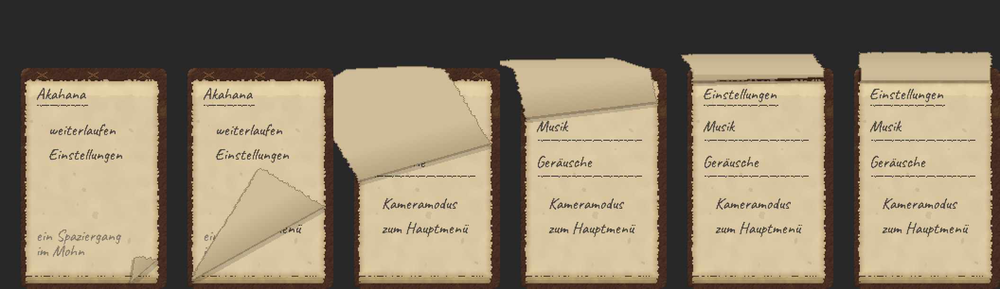<figcaption>Runde 4 in sechs Einzelbildern.</figcaption></figure>
<p><b>Runde 3:</b> Das Blatt geht jetzt über den ganzen Buchrücken: Es rollt über das Lederband mit den Kreuzstichen und legt sich oben dahinter. Dort bleibt es liegen, schräg nach hinten, mit der Biegung als Rundung über dem Band. Wenn du zurückblätterst, kommt es von dort wieder herunter.</p>
<figure><video src="bild/umblaettern_A3.mp4" autoplay loop muted playsinline></video><figcaption><b>Runde 3:</b> über den Rücken, und es bleibt oben liegen.</figcaption></figure>
<figure>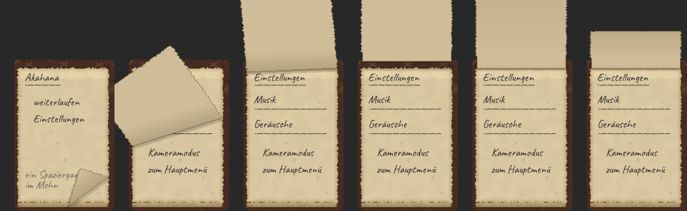<figcaption>Runde 3 in sechs Einzelbildern, das letzte ist der Ruhezustand.</figcaption></figure>
<p><b>Runde 2:</b> Du hast A gewählt, aber das Blatt soll nicht verschwinden, sondern nach hinten umblättern. Das Buch ist oben gebunden, mit den Kreuzstichen im Lederband. Deshalb rollt die Ecke jetzt nach oben zur Bindung. Dann stellt sich das Blatt über die Kante auf und klappt nach hinten hinter das Buch, wie bei einem Notizblock. Die Erinnerungsseiten heben wir uns für später auf, wie du gesagt hast.</p>
<figure><video src="bild/umblaettern_A2.mp4" autoplay loop muted playsinline></video><figcaption><b>A, Runde 2:</b> über die Bindung nach hinten.</figcaption></figure>
<figure>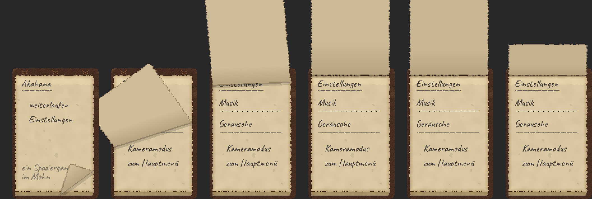<figcaption>Runde 2 in sechs Einzelbildern.</figcaption></figure>

<p><b>Runde 1:</b></p>
<p>Heute blendet eine Seite beim Wechsel (z. B. zu den Einstellungen) nur aus und wieder ein. Jetzt soll sich das Papier wirklich umblättern. Die Schrift wird dabei nie verbogen oder verzerrt: Nur die Knicklinie wandert, das umgeschlagene Stück zeigt die Rückseite des Papiers, und darunter kommt die neue Seite zum Vorschein, mit einem leichten Schatten am Knick. Zurück läuft es rückwärts.</p>
<figure><video src="bild/umblaettern_A.mp4" autoplay loop muted playsinline></video><figcaption><b>A · Ecke:</b> Die untere rechte Ecke hebt sich, rollt quer über die Seite und schwenkt zum Buchrücken.</figcaption></figure>
<figure><video src="bild/umblaettern_B.mp4" autoplay loop muted playsinline></video><figcaption><b>B · ganze Seite:</b> Das Blatt dreht sich gerade über den Buchrücken nach links.</figcaption></figure>
<figure>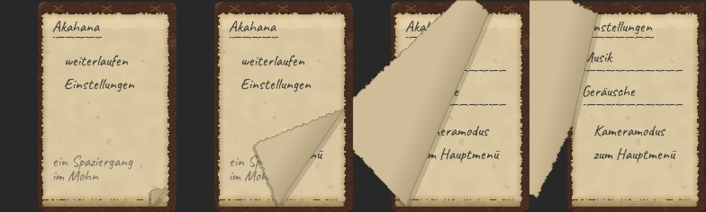<figcaption>A in vier Einzelbildern.</figcaption></figure>
<p><b>Erinnerungen:</b> So stelle ich mir die Erinnerungsseiten vor, nach deinem Ideenblatt. Auf der ersten Buchseite kommt ein neuer Eintrag „Erinnerungen“ dazu. Für jeden besonderen Ort, an dem der Mönch war, erscheint von selbst eine Seite: der Ortsname, eine kleine Bleistiftskizze und zwei, drei Zeilen. Die Seiten kommen in der Reihenfolge, in der du die Orte findest. Es gibt keine leeren Plätze, keine Fragezeichen und keine Zählung.</p>
<figure>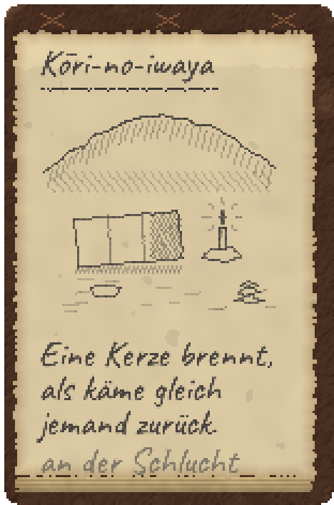<figcaption>Beispiel: die Seite für die Höhle, mit dem Rastplatz und der Kerze als Skizze.</figcaption></figure>
<p><b>Orte, die eine Seite bekommen würden</b> (mein Vorschlag, 17 Stück): Mohnfeld, Lager mit Feuer, Kapellenruine, die Gräber, Ritualplatz im Osten, Waldteich, Riesenbaum im Ostwald, Steinbrücke, der See im Süden mit Steg, die Quelle im Grasland, Felstor, Holzfällerhütte, Höhle, Steg über der Schlucht, Aussicht, Pass mit Jizō, Bergsee mit Wasserfall.</p>
<p><b>Wenn eine neue Seite dazukommt:</b> Der Buchknopf unten rechts bekommt für einen Moment einen kleinen Bleistiftstrich, und es raschelt ganz leise. Mehr nicht, es soll nicht stören.</p>
<p><i>Die Erinnerungsseiten kommen später, nach mehr Arbeit daran.</i></p>
</details>
<details class="step" id="norden-schneefall" open><summary><div class="tag">SCHRITT 57 · NORDEN · SCHNEEFALL · RUNDE 2</div><h2>Schneefall</h2></summary>
<p><b>Runde 2:</b> Du willst es unten wie A und nach oben hin wie B, insgesamt eher B. So wird es im Spiel: Die Dichte steigt mit der Höhe, und schon ab der Mitte des Nordens fällt fast B. Hier fällt der Schnee direkt über deinem Screenshot vom Pass, das ist also genau der Spiel-Look. Der Pass liegt weit oben, deshalb ist es hier B, zum unteren Bildrand hin etwas lockerer.</p>
<figure><video src="bild/schneefall_pass.mp4" autoplay loop muted playsinline></video><figcaption><b>Schneefall am Pass</b>, über deinem Screenshot.</figcaption></figure>
<p class="ask">Passt das so? Dann baue ich den Schneefall ins Spiel ein.</p>
<p><b>Runde 1:</b></p>
<p>Die Schneise läuft im Spiel (0.13.0). Jetzt kommt der fallende Schnee dazu, dann ist der Norden fürs Erste komplett.</p>
<ul>
<li><b>Wo:</b> nur im Norden. Am Felstor ganz leicht, nach oben zum Pass hin dichter. Unter dichten Tannen fällt weniger, in der Höhle gar nichts.</li>
<li><b>Tiefe:</b> Es gibt drei Größen. Kleine, blasse Flocken fallen langsam und wirken weit weg. Mittlere fallen schneller. Ein paar große, nahe Flocken sind am schnellsten. Die mittleren und großen werfen einen kleinen Schatten auf den Boden, versetzt nach rechts unten, weil das Licht von links oben kommt.</li>
<li><b>Sichtbarkeit:</b> Weiße Flocken auf weißem Schnee gingen im ersten Versuch unter. Im Spiel macht das Abendlicht den Schnee grauer (ich habe es auf deinem Screenshot gemessen). Die Flocken werden deshalb darüber gezeichnet und sind heller als der Boden. Das Video bildet dieses Abendlicht nach.</li>
<li><b>Wind:</b> Die Flocken fallen leicht schräg und pendeln ein wenig.</li>
</ul>
<figure><video src="bild/schneefall_A.mp4" autoplay loop muted playsinline></video><figcaption><b>A · leicht:</b> ruhiger, lockerer Schneefall.</figcaption></figure>
<figure><video src="bild/schneefall_B.mp4" autoplay loop muted playsinline></video><figcaption><b>B · dichter, mit Böen:</b> etwa doppelt so viele Flocken, und alle paar Sekunden treibt eine Böe sie zur Seite.</figcaption></figure>
<figure><figcaption>Standbild, links A, rechts B.</figcaption></figure>
<p class="ask">A oder B? Oder A unten im Wald und B oben am Pass?</p>
</details>
<details class="step" id="norden-spuren" open><summary><div class="tag">SCHRITT 56 · NORDEN · FUSSSPUREN · RUNDE 4</div><h2>Spuren im Schnee</h2></summary>
<p>Wo der Mönch durch frischen Schnee läuft, bleiben bei jedem Schritt Abdrücke. Ein Abdruck ist eine kleine Mulde, hinten dunkler, und vorne liegt etwas aufgeschobener, heller Schnee. Auf den getretenen Pfaden entstehen keine Spuren, dort ist der Schnee schon festgetreten.</p>
<p><b>Runde 4:</b> Die Kanten waren zu glatt und sahen aus wie ein Weg, den es schon immer gab. Jetzt sind sie vom Mantel ausgefranst: Jeder Schritt drückt eine kleine Ausbuchtung zur Seite, und der Saum zieht kurze, unregelmäßige Schleifspuren in den Rand. Die Farbe aus Runde 3 bleibt. Links siehst du Runde 3, rechts Runde 4.</p>
<figure><figcaption>Links Runde 3 (glatte Kanten), rechts Runde 4 (ausgefranst).</figcaption></figure>
<figure><video src="bild/spuren_B4.mp4" autoplay loop muted playsinline></video><figcaption><b>Runde 4 · ausgefranste Furche</b></figcaption></figure>
<figure><figcaption>Das Zuwehen in vier Bildern.</figcaption></figure>
<p><b>Runde 3:</b> Die bläulichen Töne sahen nach Eis aus. Die Furche hat jetzt nur noch die warmen Grautöne des Schnees drumherum, nur abgedunkelt. Links siehst du Runde 2, rechts die neue Färbung.</p>
<figure><figcaption>Links Runde 2 (bläulich), rechts Runde 3 (Schneefarben).</figcaption></figure>
<figure><video src="bild/spuren_B3.mp4" autoplay loop muted playsinline></video><figcaption><b>Runde 3 · Furche in Schneefarben</b></figcaption></figure>
<figure><figcaption>Das Zuwehen in vier Bildern.</figcaption></figure>
<p><b>Runde 2:</b> Du wolltest B, aber mit einer Schneise wie in deinem TikTok-Video. Jetzt ist sie eine richtige Furche, so breit wie der Mönch. Innen liegt aufgewühlter Schnee in hellen und dunklen Klumpen, die Fußabdrücke sind als dunkle Mulden darin. Die Wand zur Lichtseite liegt im Schatten, die gegenüberliegende fängt Licht. Außen herum liegt ein unregelmäßiger Wall aus aufgeschobenem Schnee, mit ein paar weggekickten Klumpen daneben. Der Wind weht die Furche von den Wänden her zu: Sie wird erst schmaler, dann verschwinden die letzten Klumpen. Der Weg biegt jetzt in Kurven statt in Ecken ab, so wie der Mönch im Spiel läuft.</p>
<figure><video src="bild/spuren_B2.mp4" autoplay loop muted playsinline></video><figcaption><b>B, Runde 2 · Furche</b></figcaption></figure>
<figure><figcaption>Die Furche nah.</figcaption></figure>
<figure><figcaption>Das Zuwehen in vier Bildern, von links nach rechts.</figcaption></figure>
<p><b>Runde 1</b> zum Vergleich:</p>
<p><b>Wie lange sie bleiben:</b> Im Spiel sind die Spuren etwa 40 Sekunden lang scharf. Danach weht der Wind sie in etwa 20 Sekunden Pixel für Pixel zu, statt sie einfach auszublenden. Im Video ist das verkürzt: Er bleibt am Ende stehen, die Spuren halten 9 Sekunden und wehen dann in 4 Sekunden zu.</p>
<figure><video src="bild/spuren_A.mp4" autoplay loop muted playsinline></video><figcaption><b>A · Einzelne Abdrücke:</b> nur die Fußabdrücke, links und rechts im Wechsel.</figcaption></figure>
<figure><video src="bild/spuren_B.mp4" autoplay loop muted playsinline></video><figcaption><b>B · Mit Spurrinne:</b> zwischen den Abdrücken eine leicht getretene Rinne, wie ein frischer Pfad.</figcaption></figure>
<div class="shots">
<figure><figcaption>A nah</figcaption></figure>
<figure><figcaption>B nah</figcaption></figure>
</div>
<p class="ask">Passen die Kanten jetzt? Und passen die Zeiten, also 40 Sekunden sichtbar und 20 Sekunden zuwehen, oder soll sie länger bleiben?</p>
</details>
<details class="step" id="norden-klang" open><summary><div class="tag">SCHRITT 55 · NORDEN · KLÄNGE</div><h2>Wasserfall, Wind im Tannenwald, knarzende Hütte</h2></summary>
<p>Der Norden hat schon Schneeschritte und oben den Bergwind. Neu kommen drei Klänge dazu, alle aus freien Aufnahmen (CC0). Die Proben sind gleich laut, damit du nur den Klang vergleichst. Im Spiel werden sie danach leiser eingepegelt. Ich habe sie auf Vogelstimmen geprüft, die im Winter falsch wären. Alle Proben sind frei davon.</p>
<div class="sounds">
<p><b>1 · Wasserfall</b>: Er ist zu hören, wenn man am Bergsee in seiner Nähe steht, und wird mit dem Abstand leiser.</p>
<figure><audio controls preload="none" src="ton/fall_a.mp3"></audio><figcaption><b>A</b>: ein ruhiger Wasserfall, gleichmäßiges Rauschen.</figcaption></figure>
<figure><audio controls preload="none" src="ton/fall_b.mp3"></audio><figcaption><b>B</b>: ein kleiner Fall über Steine, plätschernder und näher.</figcaption></figure>
<figure><audio controls preload="none" src="ton/fall_c.mp3"></audio><figcaption><b>C</b>: ein Fall in ein Becken, voller und tiefer.</figcaption></figure>
<p><b>2 · Wind im verschneiten Tannenwald</b>: Er läuft im dichten Nadelwald des Nordens statt des leisen Hauchs von heute. Draußen auf den Hängen bleibt der Bergwind.</p>
<figure><audio controls preload="none" src="ton/wald_a.mp3"></audio><figcaption><b>A</b>: Wind hoch in den Kiefern, große langsame Wellen, sehr still darunter.</figcaption></figure>
<figure><audio controls preload="none" src="ton/wald_b.mp3"></audio><figcaption><b>B</b>: ein kleiner Schneesturm, rauer und kälter.</figcaption></figure>
<figure><audio controls preload="none" src="ton/wald_c.mp3"></audio><figcaption><b>C</b>: ein gleichmäßiger Waldwind, weicher.</figcaption></figure>
<p><b>3 · Knarzendes Holz an der Hütte</b>: Ab und zu ein einzelnes Knarzen, wenn man auf der Lichtung der Holzfällerhütte steht. Die Proben haben deshalb Pausen dazwischen.</p>
<figure><audio controls preload="none" src="ton/knarz_a.mp3"></audio><figcaption><b>A</b>: knarzendes Holz im Wald, mit Wind dahinter.</figcaption></figure>
<figure><audio controls preload="none" src="ton/knarz_b.mp3"></audio><figcaption><b>B</b>: Holztüren und Dielen einer Hütte, näher und trockener.</figcaption></figure>
<figure><audio controls preload="none" src="ton/knarz_c.mp3"></audio><figcaption><b>C</b>: ein Baum, der im Wind knarzt, tiefer und langsamer.</figcaption></figure>
</div>
<p class="ask">Welche nimmst du jeweils: Wasserfall A, B oder C, Waldwind A, B oder C, Knarzen A, B oder C? Oder soll bei einem davon noch eine andere Aufnahme her?</p>
</details>
<details class="step" id="norden-plan" open><summary><div class="tag">SCHRITT 50 · NORDEN · PLAN</div><h2>雪峰峠 Yukimine-tōge: Wald und Gebirge</h2></summary>
<p>Der Norden nach deinem Ideenblatt: Vom verschneiten Kogarashi aus wird es nach oben kälter und felsiger. Einzelne Tannen werden zum dichten Nadelwald, dann kommen steinige Pfade und oben die verschneite Berglandschaft. Die Welt wächst dafür um 1200 Pixel nach oben, über die ganze Breite. Alles, was es heute gibt, bleibt genau so.</p>
<figure><figcaption>Plan-Skizze (keine Grafik, nur die Aufteilung). Unter der roten Linie liegt die heutige Welt, wie sie im Spiel aussieht, links Kogarashi, rechts der Ostwald. Dunkelgrün = Nadelwald, grau = Fels, weiß = Schnee, dunkel = Schlucht, blau = Bergsee und Fluss, beige = Pfade.</figcaption></figure>
<ul>
<li><b>1 Felstor:</b> Der Pfad aus Kogarashi, der heute oben am Felsband endet, bricht hindurch.</li>
<li><b>2 Nadelwald:</b> verschneite Tannen, die nach oben dicht und dunkel werden. Hier hängt der Mönch seine Laterne auf.</li>
<li><b>3 Holzfällerhütte</b> auf einer Lichtung: Blockhütte mit warmem Fensterlicht, Holzunterstand, Hackklotz mit Axt, Stümpfe, liegende Stämme, Laterne am Pfahl. Die Bausteine kommen aus deinem Berg-Sperrbildschirm (unten), nur klein für das Spiel gezeichnet.</li>
<li><b>4 Höhle:</b> Felsmaul mit Eiszapfen an der Schlucht, ein paar Schritte begehbar und dunkel.</li>
<li><b>5 Schlucht mit Steg:</b> eine Felsspalte quer durchs Gebiet, unten ein zugefrorener Bach, darüber ein schmaler Holzsteg.</li>
<li><b>6 Serpentinen:</b> schmaler Bergpfad im Zickzack über den Felshang, mehr Schnee, Krüppelkiefern.</li>
<li><b>7 Aussicht:</b> Felsvorsprung mit Bank und Steinlaterne, Blick nach Osten über Bergsee und Wald.</li>
<li><b>8 Pass</b> zwischen den Gipfeln: Steinmännchen, ein verschneiter Jizō, Steinlaterne. Dahinter Nebel, kein sichtbarer Weltrand.</li>
<li><b>9 Bergsee mit Wasserfall:</b> halb zugefroren. Aus ihm entspringt der Fluss, der heute unter der Steinbrücke im Ostwald fließt.</li>
<li><b>10 Flussweg:</b> vom Bergsee am Fluss entlang hinunter zur Steinbrücke im Ostwald.</li>
</ul>
<p><b>Rundweg ohne Sackgassen:</b> Kogarashi → Felstor → Hütte → Schlucht → Serpentinen → Aussicht → Bergsee → Flussweg → Steinbrücke im Ostwald → zurück zum Mohnfeld. Höhle und Pass sind kleine Abstecher mit Ziel.</p>
<p><b>Schnee:</b> Der Schnee nimmt nach oben zu, mit Wehen an Felsen und Stämmen. Unter dichten Tannen liegt weniger. Fallender Schnee und Fußspuren sind eine eigene spätere Aufgabe.</p>
<p><b>Licht:</b> Dunkel sind der dichte Nadelwald und die Höhle, dort kommt die Laterne. Warm leuchten nur die Hütte, die Laternen und eine Kerze in der Höhle.</p>
<figure><figcaption>Die abgenommenen Bausteine aus deinem Berg-Sperrbildschirm: Hütte, Holzunterstand, Hackklotz mit Fällaxt, Stümpfe, Stämme, Laternen und verschneite Tannen. Im Spiel werden sie kleiner, passend zum Mönch.</figcaption></figure>
<p><b>Namensvorschläge</b> (alles japanisch, wie bei den anderen Orten): 岩門 Iwakado (Felstor) · 樅の森 Momi-no-mori (Tannenwald) · 木樵の小屋 Kikori-no-koya (Holzfällerhütte) · 氷の岩屋 Kōri-no-iwaya (Eishöhle) · 雪谷 Yukidani (Schneeschlucht) · つづら折り Tsuzuraori (Serpentinen, wörtlich „gewundener Pfad“) · 見晴らし Miharashi (Aussicht) · 白滝 Shirataki (weißer Wasserfall) am 氷池 Kōri-ike (Eisteich).</p>
<p><b>Danach</b> geht es wie beim Süden weiter: Ich zeichne Zone für Zone einen echten Entwurf zur Abnahme (erst Wald + Hütte, dann Schlucht + Höhle, dann Fels + Pass, dann Bergsee + Fluss). Danach kommen Generator, Licht und Klänge, und am Ende wird alles auf einmal gebaut.</p>
<p class="ask">Passt der Plan so: Lage der Orte, Rundweg, Bergsee als Quelle des Ostwald-Flusses? Soll es in der Höhle etwas zu entdecken geben (Kerze, kleiner Altar), oder nur Stimmung? Und gefallen dir die Namen?</p>
</details>
<details class="step" id="norden-1" open><summary><div class="tag">SCHRITT 51 · NORDEN · ZONE 1 · RUNDE 3</div><h2>Felstor, Nadelwald und Holzfällerhütte</h2></summary>
<p><b>Neu auf deine Hinweise:</b></p>
<ul>
<li><b>Weniger Tannen:</b> Am dichtesten stehen sie jetzt um die Hütte herum. Nach oben zum Gebirge hin werden sie immer weniger, sodass oben kein zweiter Wald entsteht.</li>
<li><b>Hütte und Umgebung kleiner:</b> Sie hat jetzt die Größe des Hirtenhauses in Kogarashi, mit kleinen Fenstern wie dort. Holzunterstand, Hackklotz, Stümpfe, Stämme und Laterne sind im gleichen Maß verkleinert, und der Hackklotz ist niedriger und hat eine Axt in Handgröße (Kopf 5×4 Pixel, kurzer Stiel).</li>
<li><b>Weniger Schneeflecken im Ostwald.</b></li>
<li><b>Harte Kante im Boden weg</b> (deine rote Linie): Dort traf der neue Schneeboden, der die alte Felswand ersetzt hatte, auf den nach oben gespiegelten Waldboden. Jetzt gibt es nur noch einen durchgehenden Boden, der an der Unterkante der alten Felswand gespiegelt wird und sich in Flecken mit dem neuen mischt.</li>
</ul>
<figure><figcaption>Größenvergleich im selben Maßstab: links die neue Holzfällerhütte mit Unterstand, in der Mitte das Hirtenhaus aus Kogarashi, rechts der Mönch.</figcaption></figure>
<figure><figcaption>Zone 1 im Ganzen (ohne Abendfilter). Unten die heutige Welt mit Kogarashi links und dem Ostwald rechts.</figcaption></figure>
<div class="shots">
<figure><figcaption>Die Lichtung mit der kleineren Hütte. Oben gehen die Pfade weiter, links zur Höhle und rechts zur Schlucht.</figcaption></figure>
<figure><figcaption>Felstor: Statt der Felswand liegen verstreute Felsen, und der Erdpfad geht in den getretenen Schneepfad über.</figcaption></figure>
<figure><figcaption>Übergang zum Ostwald: Tannen und knorrige Bäume greifen ineinander, mit weniger Schnee als vorher.</figcaption></figure>
</div>
<p class="ask">Passt es jetzt? Wenn ja, zeichne ich als Nächstes Zone 2: Schlucht mit Steg und die Höhle mit ihrer kleinen Entdeckung.</p>
</details>
<details class="step" id="norden-2"><summary><div class="tag">SCHRITT 52 · NORDEN · ZONE 2 · RUNDE 9</div><h2>Schlucht mit Steg und Höhle</h2></summary>
<p><b>Neu:</b> Du hast Variante B gewählt (Erdhang) und wolltest sie gräulicher. Die Front des Hügels ist jetzt eine Mischung aus grauem Kies und brauner Erde. Die Erde liegt in Klumpen im Kies, dazu kommen helle Kiesel mit kleinen Schatten, ein paar größere Steine, Wurzeln an der Oberkante, darüber überstehender Schnee, und zum Fuß hin wird die Wand dunkel.</p>
<p><b>Runde 8:</b> Die Wurzeln waren nur gerade Striche. Jetzt hängen ein paar echte Wurzeln aus der Oberkante: Sie schlängeln sich nach unten und zweigen dünnere Seitenwurzeln ab. Oben sind sie dick mit heller Kante links, unten laufen sie dünn mit heller Spitze aus.</p>
<p><b>Runde 9:</b> Der Schnee am Höhleneingang innen liegt jetzt nur noch auf dem Boden, die Felsen liegen darüber. Vorher hatte ich ihn nach den Felsen gezeichnet. Die Kante unten ist auch weg: Der Gang wird jetzt über den Bildrand hinaus berechnet und läuft unten aus dem Bild.</p>
<figure><figcaption>Zum Vergleich die vier Varianten, aus denen du B gewählt hast.</figcaption></figure>
<figure><figcaption>Die Wand nah: Kies und Erde gemischt, der Eingang mit Holzrahmen und Kerze.</figcaption></figure>
<div class="shots">
<figure><figcaption>Von außen: Kuppe mit Tannen, vorne die geschichtete Wand mit dem Eingang. Im Dunkeln glimmt die Kerze.</figcaption></figure>
<figure><figcaption>Von innen, ein Bildschirm: kantige Felswände, Boden aus dem Bodengenerator der Welt, in der Mitte der Rastplatz im Kerzenlicht.</figcaption></figure>
<figure><figcaption>Der Eingang von innen: Der Schnee läuft weich aus, ohne Kante.</figcaption></figure>
<figure><figcaption>Der Rastplatz nah.</figcaption></figure>
</div>
<figure><figcaption>Zone 2 im Ganzen (ohne Abendfilter).</figcaption></figure>
<p class="ask">Passt Zone 2 jetzt? Dann zeichne ich als Nächstes Zone 3: Serpentinen, Aussicht und Pass.</p>
</details>
<details class="step" id="norden-3"><summary><div class="tag">SCHRITT 53 · NORDEN · ZONE 3 · RUNDE 3</div><h2>Serpentinen, Aussicht und Pass</h2></summary>
<p>Zone 3 liegt über der Schlucht, die unten zur Orientierung noch mit dem Steg zu sehen ist. Hier geht es hoch ins Gebirge.</p>
<figure><figcaption>Zone 3 im Ganzen (ohne Abendfilter). Von der Schlucht unten führt der Bergpfad in Kehren den Felshang hinauf zum Pass. Nach rechts zweigt er zur Aussicht ab. Oben stehen links und rechts die Gipfel aus denselben kantigen Felsen wie in der Höhle, mit Schnee auf allem, was nach oben zeigt. Hinter dem Pass löst sich die Welt in Nebel auf, ohne Kante.</figcaption></figure>
<div class="shots">
<figure><figcaption>Der Pass: Der Pfad windet sich hinauf in den Sattel zwischen den Gipfeln. Oben stehen eine Steinlaterne, ein Jizō mit roter Mütze und Schnee auf Kopf und Schultern, und drei Steinmännchen. Entlang der Kehren liegen Steine, als hätte jemand den Weg gepflegt.</figcaption></figure>
<figure><figcaption>Die Aussicht: ein Felsvorsprung, dessen Ost- und Südseite felsig abfällt. Oben stehen eine Steinbank und eine Steinlaterne mit Blick nach Osten über Bergsee und Wald.</figcaption></figure>
</div>
<p><b>Abgenommen.</b> Zum Schluss fließt der Bach von der Quelle zum Wasserfall als offenes Wasser mit vereisten Rändern. Ein zugefrorener Bach könnte keinen Wasserfall speisen. Im Spiel bewegt er sich wie See und Fluss, nur die Eisfläche auf dem See bleibt starr.</p>
<p><b>Runde 4:</b> Die Steine an der Quelle sind größer, und zwei liegen vorne halb über dem Becken. Der Wasserfall spritzt mehr: Die Gischt ist breiter, Tropfen fliegen nach außen, daneben steigt feiner Nebel auf, und auf dem offenen Wasser laufen Ringe nach außen. Im Spiel bewegen sich See und Fluss mit dem vorhandenen Wasser-Shader, die Eisfläche bleibt starr.</p>
<figure><figcaption>Die Quelle: Die Steine liegen direkt am Becken, und der Bach fließt aus dem Becken heraus nach rechts unten.</figcaption></figure>
<p><b>Runde 3:</b> An der Aussicht lagen Felsen des Vorsprungs auf dem Pfad, und eine Tanne wuchs unter dem Felsrand hindurch. Jetzt bleiben Felsen vom Pfad weg, und der ganze Vorsprung samt Rand ist für Tannen gesperrt. Nach unten reicht die Sperre weiter, weil eine Tanne von ihrem Fuß aus nach oben über den Fels wächst.</p>
<p><b>Neu: kleinere Steinlaternen.</b> Sie waren doppelt so hoch wie der Mönch. Jetzt sind sie etwa 18 statt 29 Pixel hoch, also etwas höher als er, wie echte Tōrō. Lichtpunkt und Lichtkreis sind mitgewandert. Das gilt für alle Steinlaternen der Welt: am Lager, am Hirtenhaus, im Süden, im Ostwald und hier im Norden. Alle anderen Objekte habe ich mit dem Mönch verglichen (Bild unten). Häuser, Schreine, Bänke, Brücken, Jizō und Grabsteine passen.</p>
<figure><figcaption>Jede Objektart der Welt einmal, jeweils mit dem Mönch daneben im selben Maßstab. Die Steinlaterne ist schon die neue, kleine.</figcaption></figure>
<p><b>Was ich mir dabei gedacht habe:</b> Bäume werden nach oben immer weniger, am Pass steht fast keiner mehr. Fels und Steine nehmen zu, wie im Ideenblatt: erst Nadelwald, dann steinige Wege, dann die verschneite Berglandschaft.</p>
<p class="ask">Passt Zone 3 so? Wie gefallen dir die Gipfel aus den kantigen Felsen? Und soll an der Aussicht noch etwas dazukommen?</p>
</details>
<details class="step" id="norden-4" open><summary><div class="tag">SCHRITT 54 · NORDEN · ZONE 4 · ABGENOMMEN</div><h2>Bergsee, Wasserfall und Flussweg</h2></summary>
<p>Die letzte Zone liegt östlich über dem Ostwald. Ein Bach kommt vom Berg, fällt über eine Felsstufe in den Bergsee, und aus dem See fließt der Fluss, der heute im Ostwald einfach anfängt. Jetzt hat er eine Quelle.</p>
<p><b>Runde 3:</b> Der Bach hat jetzt eine Quelle: Er kommt aus einem kleinen dunklen Becken unter einem Steinhaufen. Statt dunkler Blöcke ist er Eis unter etwas Schnee, mit wenigen kleinen offenen Stellen. Der Wasserfall ist animiert: Die Streifen laufen nach unten, die Gischt flackert, 8 Bilder in Schleife.</p>
<figure><figcaption>Von der Quelle oben bis zum Wasserfall unten.</figcaption></figure>
<figure><video src="bild/nord4_fall.mp4" autoplay loop muted playsinline style="width:100%;image-rendering:pixelated"></video><figcaption>Der Wasserfall in Bewegung.</figcaption></figure>
<p><b>Runde 2:</b></p>
<ul>
<li><b>Seeweg:</b> Er hört jetzt am Ufer auf, statt aufs Eis zu laufen.</li>
<li><b>Abfluss:</b> Der See öffnet sich trichterförmig in den Fluss, ohne spitze Schneezungen und ohne Schlammlinie dazwischen. Tannen halten am Ufer mehr Abstand.</li>
<li><b>Eis:</b> Es ist jetzt stumpf graublau statt fast weiß, damit es sich vom Wasserfall abhebt. Nur der angewehte Schnee darauf ist weiß.</li>
<li><b>Grüner Fleck am Wasserfall:</b> Das war ein Stück Ostwald-Boden, das versehentlich bis hier oben durchgekommen ist. Es ist weg.</li>
</ul>
<figure><figcaption>Der Weg vom Pass endet jetzt am Ufer des zugefrorenen Teils.</figcaption></figure>
<figure><figcaption>Zone 4 im Ganzen (ohne Abendfilter). Oben ist der verschneite Hang mit wenigen Tannen, in der Mitte der See. Nach unten wird der Nadelwald dichter und wächst in Klumpen in den heutigen Ostwald über, ohne Kante. Links kommt der Weg vom Pass herunter zum See.</figcaption></figure>
<div class="shots">
<figure><figcaption>Der Bergsee: Die westliche Hälfte ist zugefroren, mit hellem Eis, dünnen Rissen und angewehtem Schnee. Die östliche Hälfte ist offenes, dunkles Wasser. Der Wasserfall fällt ins offene Wasser.</figcaption></figure>
<figure><figcaption>Der Wasserfall nah: Der Bach oben ist größtenteils zugefroren, mit ein paar offenen Stellen. Über die kantige Felsstufe fällt ein ausgefranstes weißes Band mit Streifen, das unten breiter wird. Daneben hängen Eiszapfen, unten schäumt das Wasser.</figcaption></figure>
<figure><figcaption>Der Flussweg: Er läuft am Ostufer des Flusses hinunter in den Ostwald. Oben ist er in den Schnee getreten, unten im Wald wird er zum Erdpfad und führt weiter zur Steinbrücke.</figcaption></figure>
</div>
<p class="ask">Passt Zone 4 so? Wie gefällt dir der halb zugefrorene See? Und ist der Wasserfall so erkennbar?</p>
</details>
</main>
</main>
<script>
// remembers which steps you folded, on this device only
document.querySelectorAll('details.step').forEach(d=>{
  try{const v=localStorage.getItem('zu-'+d.id); if(v!==null) d.open=v==='0';}catch(e){}
  d.addEventListener('toggle',()=>{try{localStorage.setItem('zu-'+d.id,d.open?'0':'1');}catch(e){}});
});
</script>
